library(forecast)
library(ggplot2)
data("AirPassengers")
autoplot(AirPassengers, main = "Serie AirPassengers")
Al termine del capitolo dovresti essere in grado di:
Nei capitoli precedenti — statistica descrittiva, clustering, classificazione, regressione — l’ipotesi di lavoro, esplicita o implicita, era sempre la stessa: i dati osservati \(\{x_i\}\) o \(\{(x_i,y_i)\}\) costituiscono un campione statistico di variabili indipendenti, estratte dalla stessa distribuzione. È questa assunzione a garantire, ad esempio, che l’errore di generalizzazione stimato su un test set sia informativo sul comportamento futuro del modello (capitolo 4, sulla classificazione), e che il bootstrap possa ricampionare liberamente le osservazioni (capitolo 7, sulla regressione lineare multipla). Con le serie storiche, questa assunzione va abbandonata deliberatamente: non solo i dati non sono indipendenti nel tempo, ma è precisamente la dipendenza a essere l’oggetto di studio.
Vale la pena soffermarsi sul perché. Se le osservazioni \(y_1,\ldots,y_t\) fossero indipendenti, aver osservato mesi o anni di storia non direbbe assolutamente nulla su \(y_{t+1}\): per definizione di indipendenza, conoscere il passato non altera la distribuzione del futuro. Le serie storiche esistono, come oggetto di studio a sé, proprio perché in tantissimi fenomeni reali — economici, finanziari, climatici, epidemiologici — il passato è informativo sul futuro. L’obiettivo dell’analisi delle serie storiche è allora duplice: misurare questa dipendenza (quanto e come il passato è collegato al presente) e sfruttarla per costruire previsioni.
Una serie storica (o serie temporale, in inglese time series, abbreviato ts in R) è una sequenza di osservazioni ordinate nel tempo \[
(y_t)_{t=1,\ldots,T},
\] a valori in \(\mathbb{R}\) (serie univariata) o più in generale in \(\mathbb{R}^d\) (serie multivariata, se si osservano contemporaneamente più caratteristiche).
L’indice \(t\) non è un’etichetta arbitraria come lo era \(i\) per un campione i.i.d.: rappresenta il tempo, ha un ordine intrinseco, e questo ordine è parte della struttura del problema — non lo si può rimescolare senza perdere informazione. Dati economici, finanziari, climatici ed epidemiologici sono gli esempi più immediati: chiunque abbia consultato i dati ISTAT avrà notato che la forma “naturale” in cui vengono presentati è già quella di serie storica, perché l’interesse è proprio osservare come una quantità cambia nel tempo. Un altro esempio familiare, per chi ha vissuto la pandemia di Covid-19, sono i bollettini quotidiani dei contagi: anche in quel caso l’oggetto di interesse era una sequenza temporale, non un campione di osservazioni scambiabili.
Il corso si concentra su un obiettivo specifico: la previsione (forecasting) di valori futuri della serie, cioè stimare \(y_{t+h}\) per \(h>0\) avendo osservato \(y_1,\ldots,y_t\). Esiste un problema statistico affine ma concettualmente diverso, il filtraggio (filtering), che consiste nello stimare lo stato attuale di un sistema a partire da osservazioni rumorose (ad esempio: dato un segnale GPS rumoroso, qual è la posizione vera adesso?). Non ci occuperemo di filtraggio in questo corso, ma è utile sapere che esiste, per non confondere i due obiettivi quando si incontra il termine altrove.
Per un campione i.i.d. lo strumento grafico di base era lo scatterplot: l’ordine delle osservazioni non aveva alcun significato, quindi aveva senso disperdere i punti liberamente nel piano. Con le serie storiche l’ordine è invece l’informazione principale: lo strumento grafico primario diventa dunque il grafico temporale (time plot o line plot), con il tempo sull’asse delle ascisse.
library(forecast)
library(ggplot2)
data("AirPassengers")
autoplot(AirPassengers, main = "Serie AirPassengers")
AirPassengers registra il numero mensile di passeggeri aerei negli Stati Uniti tra il 1949 e il 1960 (in migliaia). È uno degli esempi più citati nella letteratura sulle serie storiche proprio perché mostra, in modo pulito, i due ingredienti principali che impareremo a isolare: un andamento crescente di lungo periodo (il trend) e delle oscillazioni che si ripetono regolarmente entro l’anno (la stagionalità, dovuta ai picchi di viaggi nelle vacanze).
In un time plot, chiediti sempre due cose separatamente: (1) c’è un andamento di lungo periodo, crescente o decrescente? (2) ci sono oscillazioni che si ripetono con una periodicità riconoscibile? Le due domande sono indipendenti: una serie può avere trend senza stagionalità, stagionalità senza trend, entrambe, o nessuna delle due (puro rumore).
Non tutte le serie storiche hanno questa forma pulita. Consideriamo un esempio di natura molto diversa, gli indici azionari europei:
data("EuStockMarkets")
autoplot(EuStockMarkets, main = "Indici azionari europei (1991–1998)")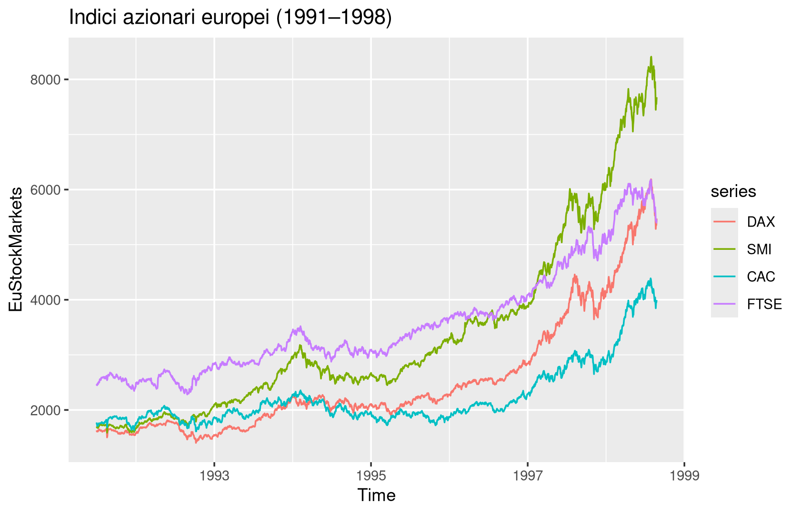
Su un orizzonte di circa sette anni, tutti e quattro gli indici mostrano un andamento crescente. Ma attenzione: se restringessimo la finestra temporale a pochi mesi, quell’andamento crescente sparirebbe quasi completamente, lasciando spazio a oscillazioni irregolari — quello che nel gergo finanziario si chiama rischio. La lezione statistica è che trend e rumore sono nozioni relative alla scala temporale di osservazione: si guadagna (in media) nel lungo periodo, ma nel breve-medio periodo domina l’incertezza. Terremo a mente questo caveat quando, più avanti, applicheremo modelli di previsione a EuStockMarkets e li vedremo comportarsi in modo deludente.
Infine un terzo esempio, complementare ai primi due perché privo di trend:
data("nottem")
autoplot(nottem, main = "Temperatura media mensile a Nottingham (1920–1939)")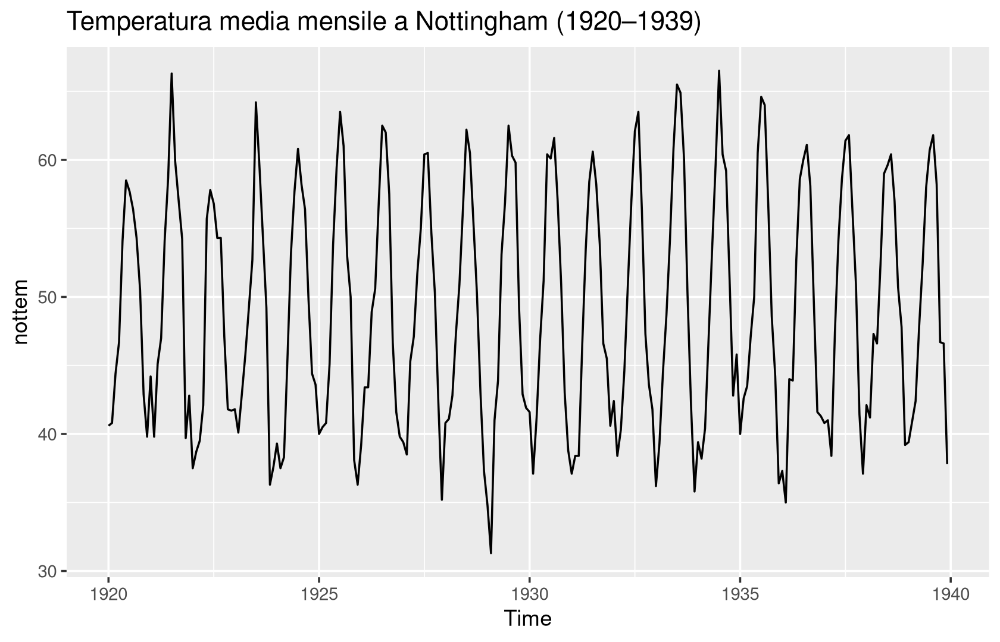
nottem raccoglie la temperatura media mensile registrata a Nottingham per vent’anni: il livello medio resta sostanzialmente costante nel tempo, ma la stagionalità (il ciclo caldo/freddo dell’anno) è evidentissima, insieme a un rumore genuino — si notino gli anni in cui gennaio è insolitamente rigido o insolitamente mite. Terremo questi tre esempi (AirPassengers, EuStockMarkets, nottem) come riferimento per l’intero capitolo.
EuStockMarkets, cosa cambierebbe nella tua lettura del grafico se disponessi solo degli ultimi tre mesi di dati anziché di sette anni?nottem non ha trend ma ha stagionalità molto forte: costruisci mentalmente l’esempio opposto (trend forte, nessuna stagionalità) e descrivi che aspetto avrebbe il suo time plot.Osservando AirPassengers abbiamo distinto informalmente due ingredienti: un andamento di lungo periodo e delle oscillazioni regolari. Formalizzare questa distinzione — la decomposizione — è il primo passo di qualunque analisi seria di una serie storica, perché permette di ragionare separatamente su ciascuna componente e, in prospettiva, di costruire previsioni componente per componente (prevedere il trend è un problema diverso, e spesso più semplice, che prevedere l’intera serie).
Una serie storica \((y_t)_t\) si può rappresentare come sovrapposizione di quattro contributi:
Il ciclo merita un commento a parte. In economia si parla spesso di cicli di 20–30 anni (espansione, crisi, ripresa): sono variazioni con una certa regolarità, ma su una scala temporale troppo ampia per essere “stagionalità” (che per definizione si ripete entro un periodo fisso e noto, come l’anno) e troppo irregolare per essere un trend pulito. Nella pratica, quando non lo isoliamo esplicitamente, il ciclo finisce assorbito nel trend (se la sua periodicità è più ampia della stagionalità) oppure nel residuo — mai nella stagionalità, che per costruzione ha periodo fisso e noto. Nella maggior parte dei modelli che vedremo lavoreremo con sole tre componenti: trend, stagionalità, residuo.
Il termine “residuo” qui non ha lo stesso significato dei residui della regressione lineare (capitolo 6): non sono gli scarti di un modello adattato ai minimi quadrati, ma semplicemente “tutto ciò che rimane” dopo aver sottratto trend e stagionalità. Per evitare confusione concettuale, preferiamo spesso i termini rumore o rimanenza, riservando “residuo” al contesto della regressione.
Idealmente, la componente residua \((R_t)\) dovrebbe essere rumore bianco (white noise): un campione di variabili identicamente distribuite, indipendenti, a media zero e varianza costante — cioè senza più alcuna struttura riconoscibile. È un obiettivo, non un dato di fatto: una decomposizione “riesce bene” nella misura in cui il residuo che produce si avvicina al rumore bianco, e “riesce male” se nel residuo permane ancora struttura (trend residuo, autocorrelazione, stagionalità non catturata). Vedremo più avanti come verificare concretamente questo aspetto tramite l’ACF dei residui.
Una volta deciso che una serie storica è somma di componenti, resta da specificare come si combinano. Le due scelte più comuni sono additiva e moltiplicativa; la scelta tra le due non è puramente estetica, ha conseguenze pratiche su come si calcolano previsioni e residui.
Decomposizione additiva: \[ y_t = T_t + S_t + R_t. \] Decomposizione moltiplicativa: \[ y_t = T_t \times S_t \times R_t. \] Passando al logaritmo, una decomposizione moltiplicativa diventa additiva: \[ \log(y_t) = \log(T_t) + \log(S_t) + \log(R_t). \]
Come si riconosce, in pratica, se una serie richiede una decomposizione moltiplicativa piuttosto che additiva? Il campanello d’allarme visivo più affidabile è questo: osserva se l’ampiezza delle oscillazioni stagionali cresce insieme al livello della serie. Se la serie sale (per effetto del trend) e le oscillazioni intorno al trend diventano via via più ampie in valore assoluto, allora la stagionalità sta effettivamente moltiplicando il trend (un contributo stagionale del \(+10\%\) produce un’oscillazione assoluta piccola quando il livello è basso, e una grande quando il livello è alto): la decomposizione moltiplicativa è la scelta più naturale. Se invece l’ampiezza delle oscillazioni resta costante indipendentemente dal livello, la decomposizione additiva è preferibile.
Guardiamo di nuovo AirPassengers:
autoplot(AirPassengers, main = "Serie AirPassengers")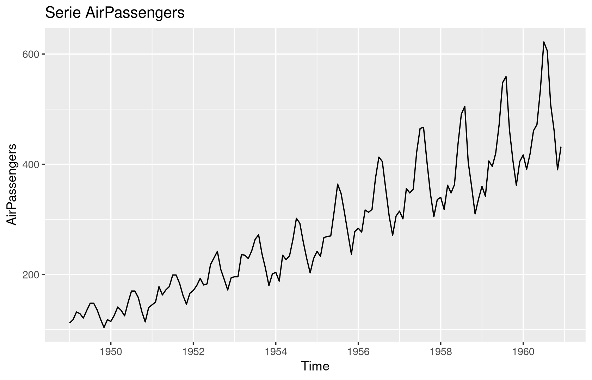
Prima di calcolare. Confronta le oscillazioni intorno al 1950 con quelle intorno al 1960: crescono, restano costanti, o si riducono? In base a questa sola osservazione, quale tipo di decomposizione ti aspetti sia più adatta?
Nella serie dei passeggeri le oscillazioni di dicembre/gennaio (i picchi di viaggio festivi) sono piccole quando il numero totale di passeggeri è basso (inizio anni ’50) e diventano molto più ampie quando il numero totale è alto (fine anni ’50): è proprio l’indizio della natura moltiplicativa.
Confrontiamo esplicitamente le due decomposizioni usando decompose() — per ora la trattiamo come una “scatola nera”: vedremo l’algoritmo di stima (basato su una media mobile) più avanti, quando affronteremo il capitolo sullo smoothing esponenziale.
fit_mult <- decompose(AirPassengers, type = "multiplicative")
autoplot(fit_mult) + ggtitle("Decomposizione moltiplicativa di AirPassengers")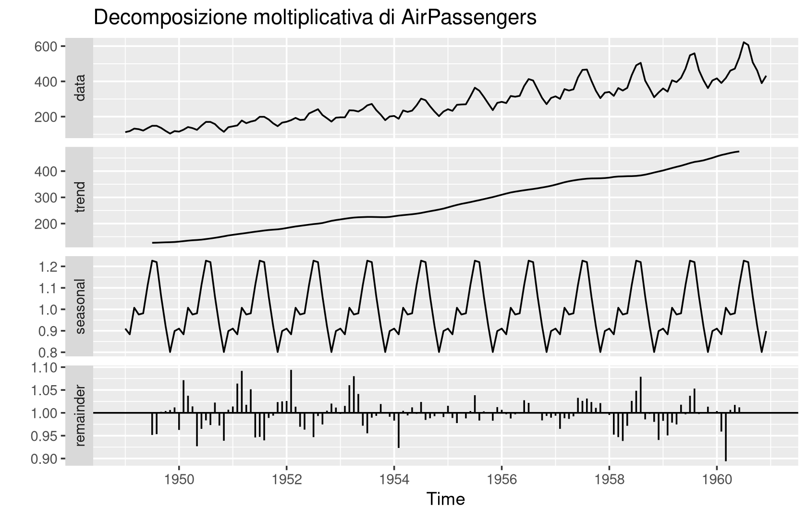
fit_add <- decompose(AirPassengers, type = "additive")
autoplot(fit_add) + ggtitle("Decomposizione additiva di AirPassengers")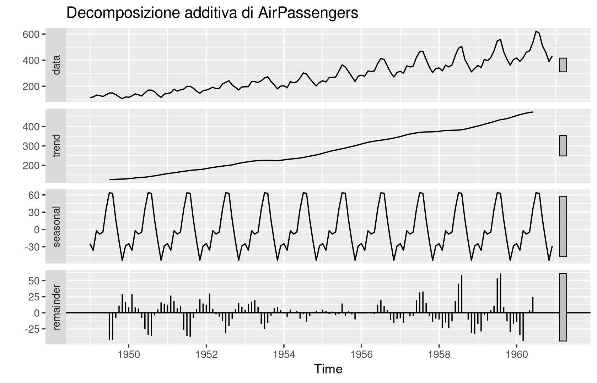
In entrambi i grafici osserviamo lo stesso trend crescente e la stessa stagionalità periodica: la differenza sostanziale sta nel pannello del residuo. Confrontando i due, si nota che nella decomposizione additiva il residuo mantiene ancora un po’ più a lungo una struttura visibile (compare, scompare, ricompare); nella moltiplicativa questa struttura è un po’ meno evidente, anche se in entrambi i casi permane un residuo di struttura: nessuna delle due decomposizioni è pienamente soddisfacente, e questo è normale con uno strumento elementare come decompose(). È un giudizio qualitativo, non un test formale, ma è esattamente il tipo di controllo che dovresti sempre fare dopo una decomposizione: guardare il pannello dei residui e chiedersi se assomiglia a rumore bianco.
La scelta tra additivo e moltiplicativo è un’euristica esplorativa, non un teorema: in alcune serie nessuna delle due funziona bene (lo vedremo tra poco a proposito di trend esponenziali “difficili”), e in altre la differenza è ininfluente ai fini pratici. Non aspettarti sempre un verdetto netto.
decompose(AirPassengers, type = "additive"), come giudicheresti la qualità della decomposizione? Che cosa dovresti vedere se fosse “perfetta”?Il time plot mostra insieme trend e stagionalità, il che può renderne difficile una lettura separata. Due grafici alternativi permettono di concentrare l’attenzione specificamente sulla stagionalità.
Il grafico stagionale (seasonal plot) si costruisce “spezzando” la serie storica anno per anno (o periodo per periodo, in generale) e sovrapponendo le curve così ottenute su un unico asse che rappresenta la posizione entro il periodo (i 12 mesi, i 7 giorni della settimana, ecc.).
ggseasonplot(AirPassengers)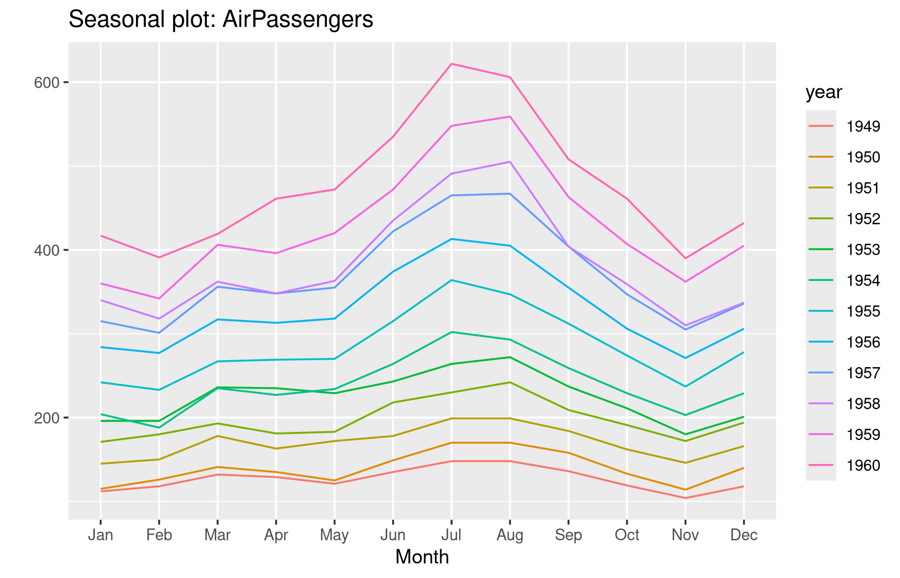
ggseasonplot(nottem) +
ggtitle("Temperatura media mensile a Nottingham (1920–1939)") +
theme(legend.position = "none")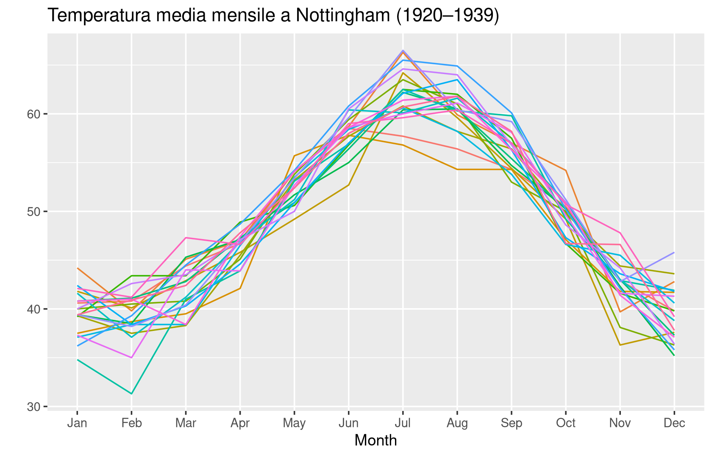
Nel grafico di AirPassengers, ogni curva colorata rappresenta un anno diverso: partendo dalla curva più bassa (1949) e salendo via via alle curve successive, il progressivo slittamento verso l’alto rivela il trend, mentre la forma comune a tutte le curve (bassa a inizio/fine anno, alta in estate) rivela la stagionalità. Nel grafico di nottem, dove non c’è trend, le curve dei vari anni si sovrappongono quasi perfettamente: è un’ulteriore conferma dell’assenza di trend, che avevamo già notato dal time plot.
Un secondo modo di isolare la stagionalità è il grafico di sottoserie (subseries plot): invece di collegare i valori cronologicamente entro ciascun anno, si collegano tra loro tutti i valori di gennaio (di anni diversi), poi tutti quelli di febbraio, e così via, ottenendo tante mini-serie storiche quante sono le posizioni nel periodo.
ggsubseriesplot(AirPassengers) +
ggtitle("AirPassengers: grafico stagionale di sottoserie")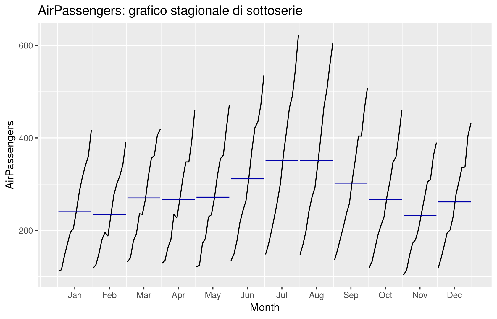
ggsubseriesplot(nottem) +
ggtitle("nottem: grafico stagionale di sottoserie")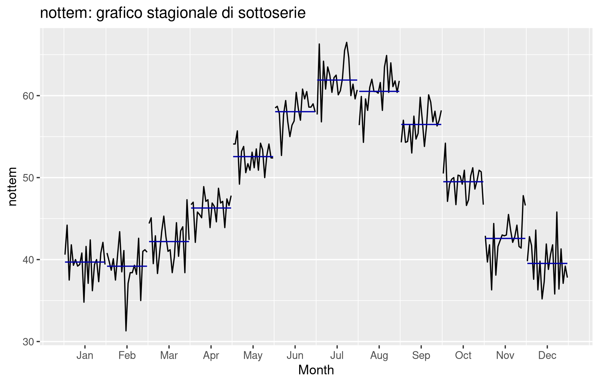
In ciascun riquadro (uno per mese), la linea blu orizzontale rappresenta la media di quella sottoserie — cioè la media di tutti i valori di gennaio, tutti quelli di febbraio, eccetera. Questo dettaglio non è solo grafico: quelle stesse medie sono esattamente il numero che useremo più avanti per calcolare esplicitamente la componente stagionale \(S_j\). Il grafico di sottoserie, in altre parole, anticipa visivamente il calcolo che faremo alla fine del capitolo.
Un’osservazione pratica sull’ordine delle operazioni: quando si opera per davvero (e non solo per esplorare graficamente), conviene di norma prima rimuovere il trend e poi stimare la stagionalità sulla serie detrendizzata, perché un trend forte tende a “sporcare” le medie di sottoserie (si veda ad esempio, in AirPassengers, come ciascun mese mostri comunque un andamento crescente nel grafico di sottoserie, semplicemente per effetto del trend). Il grafico di sottoserie in sé, però, si può disegnare indipendentemente dal fatto che il trend sia già stato rimosso o no.
AirPassengers, il grafico di sottoserie mostra un trend crescente entro ciascun mese. Cosa lo causa, se il grafico è pensato per isolare la stagionalità?Quando si hanno più serie storiche osservate sugli stessi istanti temporali \(y_t = (y_{1,t},\ldots,y_{d,t})\), uno strumento utile per visualizzarne le correlazioni reciproche è, semplicemente, lo scatterplot a coppie, esattamente come nel caso i.i.d.:
pairs(as.data.frame(EuStockMarkets))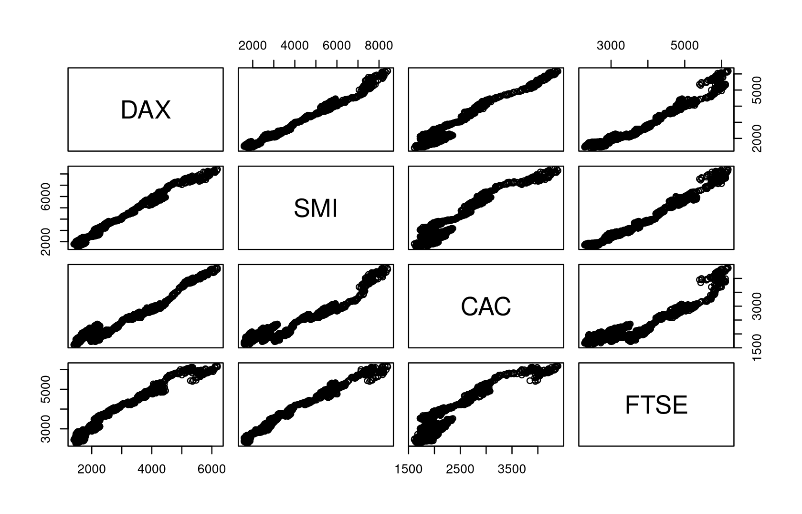
I quattro indici azionari europei mostrano tutti nuvole di punti allungate lungo la diagonale principale, segno di correlazione positiva tra loro: è un risultato atteso, dato che tutti e quattro condividono lo stesso andamento crescente di fondo osservato nel time plot multivariato. Se un indice fosse cresciuto mentre un altro fosse calato, ci saremmo aspettati un’associazione negativa nello scatterplot corrispondente.
Questo grafico si può leggere esattamente come il correlogramma incontrato a proposito della correlazione di Pearson (capitolo 3, sulla riduzione della dimensionalità e la PCA): il tempo \(t\) qui gioca il ruolo di un indice come un altro. La particolarità delle serie storiche è che a questa idea si può aggiungere il ritardo — di cui parliamo nella prossima sezione — per chiederci non solo “\(x\) e \(y\) sono correlate allo stesso istante?” ma anche “\(x\) oggi è correlata con \(y\) di ieri, o della settimana scorsa?”.
Fin qui abbiamo usato solo strumenti grafici. Per arrivare a un numero che quantifichi la dipendenza temporale — passo indispensabile per costruire previsioni — dobbiamo prima costruire, a partire dalla serie originale, delle nuove serie “spostate nel tempo”.
Indichiamo con \(L\) l’operatore di ritardo (lag, in inglese): \[ (Ly)_t = y_{t-1}, \qquad (L^2 y)_t = y_{t-2}, \qquad (L^k y)_t = y_{t-k}. \] La serie ritardata \(L^k y\) è definita solo per i tempi \(t \ge k+1\).
Il testo di riferimento del corso (Hyndman e Athanasopoulos, Forecasting: Principles and Practice) usa la notazione \(B\) (backshift) al posto di \(L\). Sono esattamente lo stesso operatore; in queste note manteniamo \(L\), più tradizionale nella letteratura statistica generale, ma se consulti il testo tieni presente l’equivalenza.
Perché la serie ritardata è definita solo a partire da \(t=k+1\)? Semplicemente perché applicare un ritardo “consuma” le prime osservazioni: se disponi di dati dal tempo \(1\) al tempo \(T\), per calcolare \(y_{t-k}\) hai bisogno che \(t-k\ge 1\), cioè \(t\ge k+1\). Più ritardi applichi, più osservazioni iniziali “perdi” — è il prezzo da pagare per costruire questa nuova informazione.
La serie ritardata serve a due scopi collegati: da un lato, permette di espandere le caratteristiche di una serie storica anche univariata, costruendo un vettore di feature \((y_{t-1}, y_{t-2}, \ldots, y_{t-L})\) utile, ad esempio, per un modello KNN (lo vedremo più avanti in questo stesso capitolo); dall’altro, e soprattutto, permette di quantificare la dipendenza temporale confrontando la serie con le proprie versioni ritardate.
Un modo naturale per visualizzare la relazione tra \(y_t\) e \(y_{t-k}\) è, di nuovo, uno scatterplot: si chiama lag plot.
gglagplot(AirPassengers, lags = 1, geom = "point", do.lines = FALSE) +
ggtitle("Lag plot di AirPassengers, k = 1")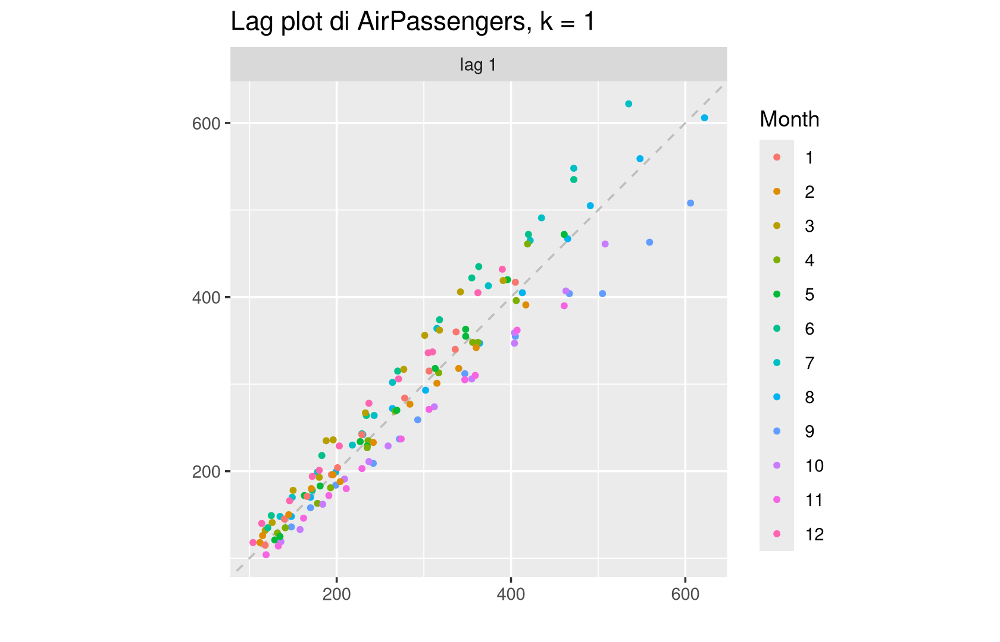
gglagplot(nottem, set.lags = 1, geom = "point", do.lines = FALSE) +
ggtitle("Lag plot di nottem, k = 1")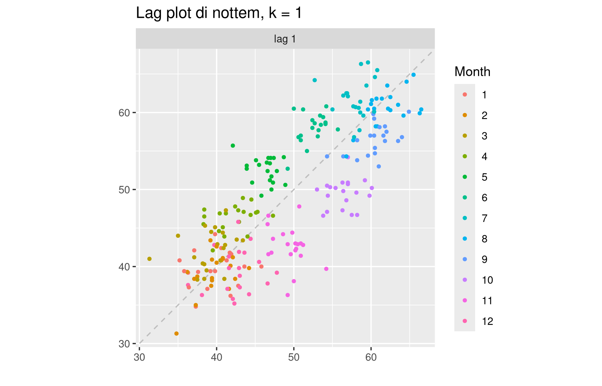
gglagplot(EuStockMarkets, set.lags = 100, geom = "point", do.lines = FALSE) +
ggtitle("Lag plot di EuStockMarkets, k = 100")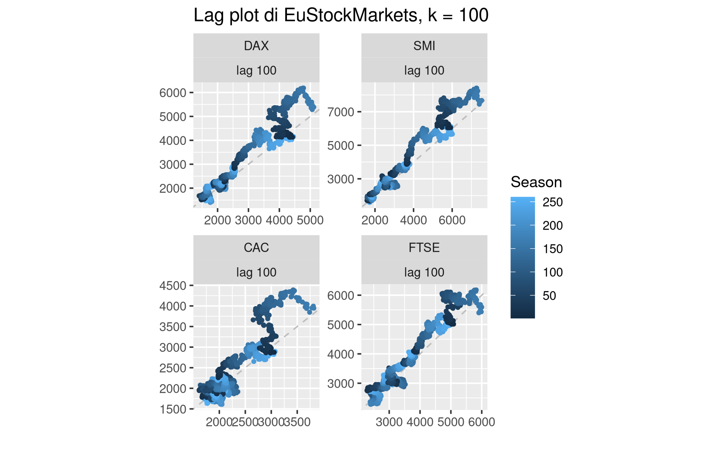
Vale, come sempre, la convenzione standard sui quadranti già incontrata a proposito della correlazione nel capitolo 3: un’associazione positiva produce una nuvola di punti concentrata nel primo e terzo quadrante, un’associazione negativa nel secondo e quarto. In AirPassengers osserviamo un’associazione chiaramente positiva; in nottem l’associazione è ancora positiva ma più dispersa, segno di un legame meno forte punto-a-punto (anche se, come vedremo, la stagionalità di nottem produce comunque un’autocorrelazione elevata a ritardi opportuni).
Nel lag plot di EuStockMarkets a ritardo \(100\), lo stesso docente del corso segnala onestamente di non essere sicuro se l’unità temporale sottostante sia il giorno di calendario o il giorno di borsa (il dataset non lo documenta con chiarezza). È un’ottima occasione per ricordare una regola pratica generale: leggi sempre la documentazione di un dataset (?EuStockMarkets in R) prima di trarre conclusioni quantitative precise sulla scala temporale.
Combinando l’idea del grafico stagionale con quella del lag plot si ottiene un grafico più ricco, in cui si osserva la nuvola di punti separatamente per ciascuna posizione nel periodo (ciascun mese):
gglagplot(AirPassengers, lags = 1, geom = "point", do.lines = TRUE, seasonal = TRUE) +
ggtitle("Lag plot con stagionalità, AirPassengers")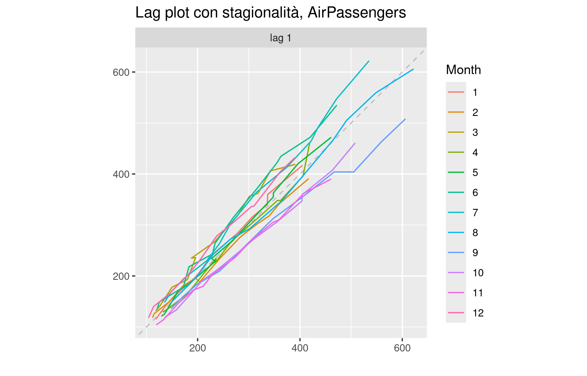
gglagplot(nottem, lags = 1, geom = "point", do.lines = TRUE, seasonal = TRUE) +
ggtitle("Lag plot con stagionalità, nottem")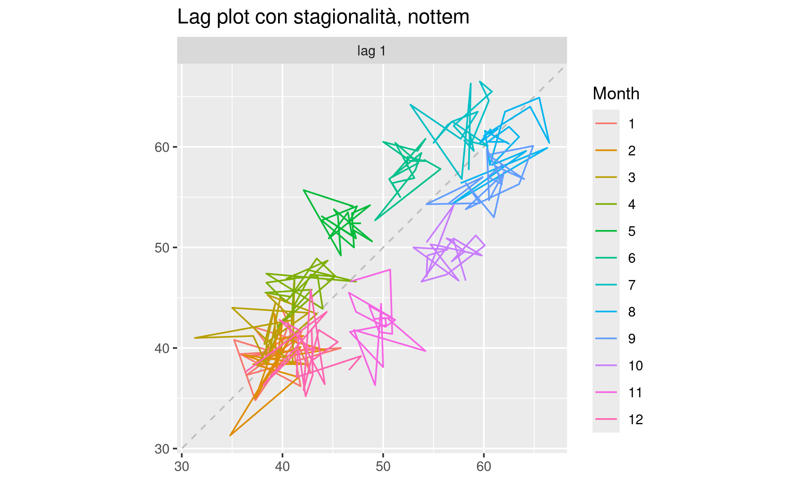
Il confronto è istruttivo: in AirPassengers tutti i mesi mostrano comunque un’associazione positiva, semplicemente a causa del trend condiviso da tutte le sottoserie mensili. In nottem, dove il trend non c’è, le nuvole di punti relative a ciascun mese si posizionano in zone diverse del piano — suggerendo che ogni mese potrebbe avere una propria intensità di correlazione, un’informazione più fine di quanto un singolo lag plot aggregato potrebbe mostrare.
AirPassengers tutti i mesi mostrano un’associazione positiva nel lag plot con stagionalità, mentre in nottem no?I lag plot danno un’impressione visiva della dipendenza tra \(y_t\) e \(y_{t-k}\), ma per confrontare rigorosamente ritardi diversi, e per costruire un criterio automatico che riveli anche periodicità non evidenti a occhio, serve una quantità numerica: la correlazione tra la serie e le proprie versioni ritardate.
Data una serie storica \(y=(y_t)\) e la sua ritardata \(L^ky\), si definiscono:
Autocovarianza (di ordine \(k\)): \[ \operatorname{C}(y)_k = \operatorname{cov}(y, L^k y) = \frac{1}{n-k}\sum_{t=k+1}^{n} (y_t-\bar y)(y_{t-k}-\bar y). \]
Autocorrelazione (ACF, AutoCorrelation Function): \[ \operatorname{acf}(y)_k = \operatorname{cor}(y, L^k y). \]
Come sempre, la covarianza dipende dall’unità di misura di \(y\), quindi in pratica si lavora quasi sempre con la versione standardizzata, l’ACF. Valori vicini a \(\pm 1\) indicano una forte dipendenza lineare fra la serie e la sua ritardata di \(k\) tempi; una serie stagionale mostra autocorrelazioni elevate a ritardi multipli del periodo.
La costante di normalizzazione \(1/(n-k)\) nella formula sopra è la scelta più naturale dal punto di vista concettuale — dopotutto ci sono esattamente \(n-k\) coppie \((y_t,y_{t-k})\) disponibili — ma l’implementazione effettiva usata da acf()/ggAcf() in R può differire leggermente (ad esempio con \(1/(n-k+1)\), o con altre piccole varianti a seconda del pacchetto). Non è un errore, è solo una scelta di normalizzazione diversa che ha un impatto trascurabile sul risultato: quello che conta concettualmente è la formula sopra, non l’ultima cifra decimale prodotta dal software.
nottemggAcf(nottem)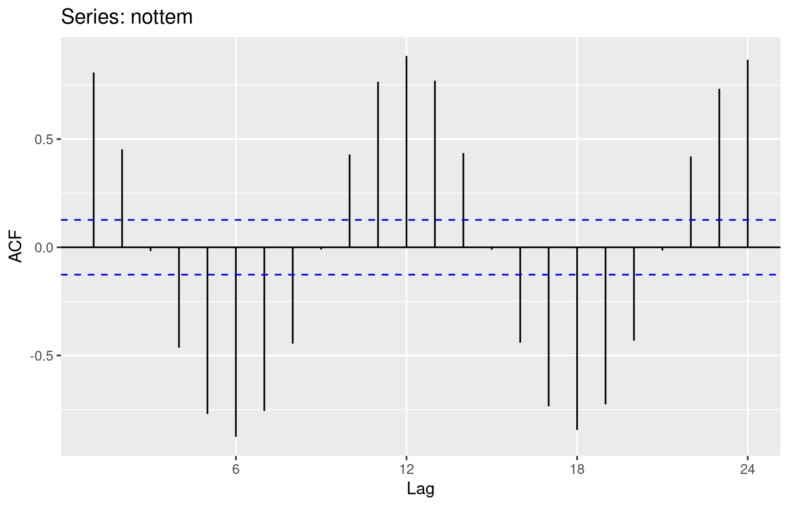
Questo grafico merita una lettura riga per riga, perché è un esempio particolarmente chiaro:
Le due linee blu tratteggiate delimitano una banda di significatività (tipicamente al livello del 95%): se una barra ricade all’interno della banda, il valore corrispondente dell’autocorrelazione campionaria è statisticamente indistinguibile da zero, e non ci si dovrebbe leggere alcuna struttura reale. Se una barra esce dalla banda, l’evidenza di autocorrelazione a quel ritardo è statisticamente significativa.
ggAcf(AirPassengers)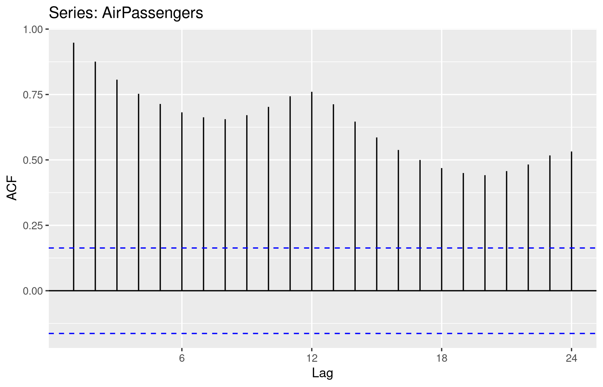
Qui la lettura è diversa e più delicata. AirPassengers ha una stagionalità annuale evidente a occhio, quindi ci si aspetterebbe un picco marcato a ritardo 12. Invece osserviamo un’autocorrelazione elevata e positiva a tutti i ritardi, che decresce solo lentamente: è l’effetto del trend, non della stagionalità. Poiché la serie cresce costantemente, confrontarla con una versione ritardata di 5, 12 o 23 mesi produce comunque un’associazione positiva, semplicemente perché entrambe le versioni condividono lo stesso andamento di fondo. Il trend maschera la stagionalità nell’ACF: per rivelare la vera struttura periodica bisogna prima rimuovere il trend, come faremo nella prossima sezione.
L’ACF è uno strumento particolarmente utile per confermare o scoprire il periodo di una serie stagionale, anche in situazioni in cui la stagionalità non è evidente a colpo d’occhio dal solo time plot.
nottem, perché il ritardo 6 mostra un’autocorrelazione fortemente negativa mentre il ritardo 12 la mostra fortemente positiva?Quando si dispone di due (o più) serie storiche osservate sugli stessi tempi, ci si può chiedere se una sia collegata all’altra non solo allo stesso istante, ma anche con un certo ritardo: la variazione di \(x\) oggi anticipa una variazione di \(y\) tra due mesi?
Date due serie storiche \((x_t)\) e \((y_t)\) osservate sugli stessi tempi, si definiscono:
Covarianza incrociata: \(C_{xy}(k) = \operatorname{cov}(x, L^k y)\).
Correlazione incrociata (cross-correlation, CCF): \(\operatorname{ccf}_{xy}(k) = \operatorname{corr}(x, L^k y)\).
ggAcf(EuStockMarkets) + ggtitle("Correlazione incrociata, EuStockMarkets")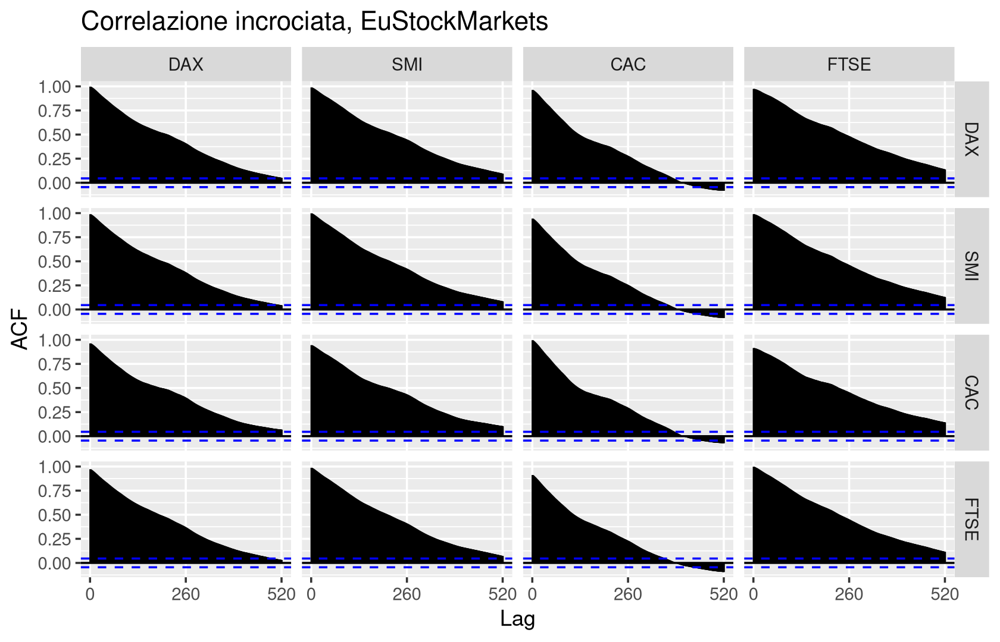
A differenza della covarianza ordinaria (per cui \(\operatorname{cov}(x,y)=\operatorname{cov}(y,x)\)), la correlazione incrociata non è simmetrica: in generale \(C_{xy}(k) \neq C_{yx}(k)\). Il motivo è che \(C_{xy}(k)\) confronta \(x\) al tempo \(t\) con \(y\) ritardata di \(k\) tempi (cioè \(y\) al tempo \(t-k\)), mentre \(C_{yx}(k)\) confronta \(y\) al tempo \(t\) con \(x\) ritardata — sono due domande diverse. È un errore concettuale comune trattare \(C_{xy}\) come se fosse simmetrica come la covarianza ordinaria.
Nell’esempio degli indici azionari europei, osserviamo una fascia di correlazione elevata che decresce lentamente al crescere del ritardo, di nuovo per effetto del trend comune a tutte le serie: è lo stesso fenomeno di mascheramento già discusso per l’ACF, qui esteso al caso incrociato.
Vale la pena una nota di prudenza pratica, applicabile a tutto questo capitolo: le analisi di autocorrelazione e cross-correlazione tendono a funzionare meno bene sui dati finanziari, perché i dati finanziari sono tipicamente molto rumorosi. Questo non significa che non valga la pena studiarli con questi strumenti, ma va tenuta bassa l’aspettativa di trovare pattern puliti come quelli osservati in AirPassengers o nottem.
AirPassengers o nottem?Abbiamo visto che il trend maschera la stagionalità nell’ACF. Prima di poter studiare la stagionalità in modo pulito, conviene quindi eliminare il trend. La strategia più semplice è la differenziazione.
L’operatore di differenza finita è \(\operatorname{diff} = I - L\), cioè \[ \operatorname{diff}(y)_t = y_t - y_{t-1}. \]
La differenziazione a tempi discreti gioca lo stesso ruolo della derivata per funzioni continue: una funzione lineare nel tempo ha derivata costante, quindi differenziare una volta un trend lineare additivo lo elimina, lasciando solo una costante. Formalmente, se \(y_t = \beta_0 + \beta_1 t + S_t\) (trend lineare più stagionalità periodica, senza rumore per semplicità), allora \[ \operatorname{diff}(y)_t = \beta_1 + \operatorname{diff}(S_t)_t: \] il trend è sparito, resta solo la costante \(\beta_1\) e la componente stagionale differenziata. Più in generale, la regola pratica è: una differenziazione rimuove un trend lineare, due differenziazioni un trend quadratico, e così via; si applica la differenziazione ripetutamente finché il trend non sembra scomparso.
autoplot(nottem, main = "nottem (nero) e differenziata (blu)") +
autolayer(diff(nottem), series = "differenziata") +
scale_colour_manual(values = c("differenziata" = "blue"))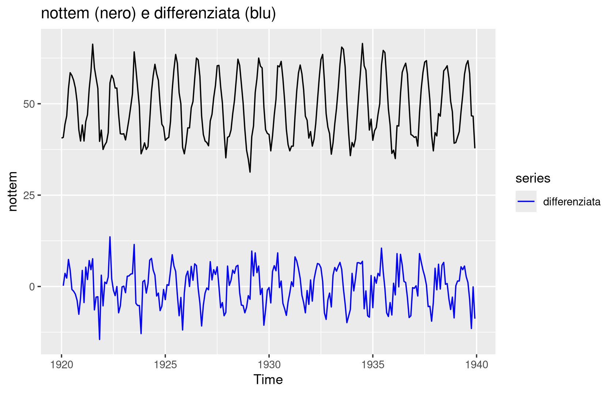
nottem non aveva trend, quindi ci aspettiamo che la differenziazione non abbia molto da “rimuovere”. Ma osserviamo comunque un effetto collaterale: la serie differenziata appare visibilmente più irregolare — un trade-off tipico della differenziazione, che introduce rumore aggiuntivo pur “consumando” solo l’informazione di primo ordine.
library(patchwork)
p1 <- ggAcf(nottem) + ggtitle("ACF di nottem originale")
p2 <- ggAcf(diff(nottem)) + ggtitle("ACF di nottem differenziata")
p1 / p2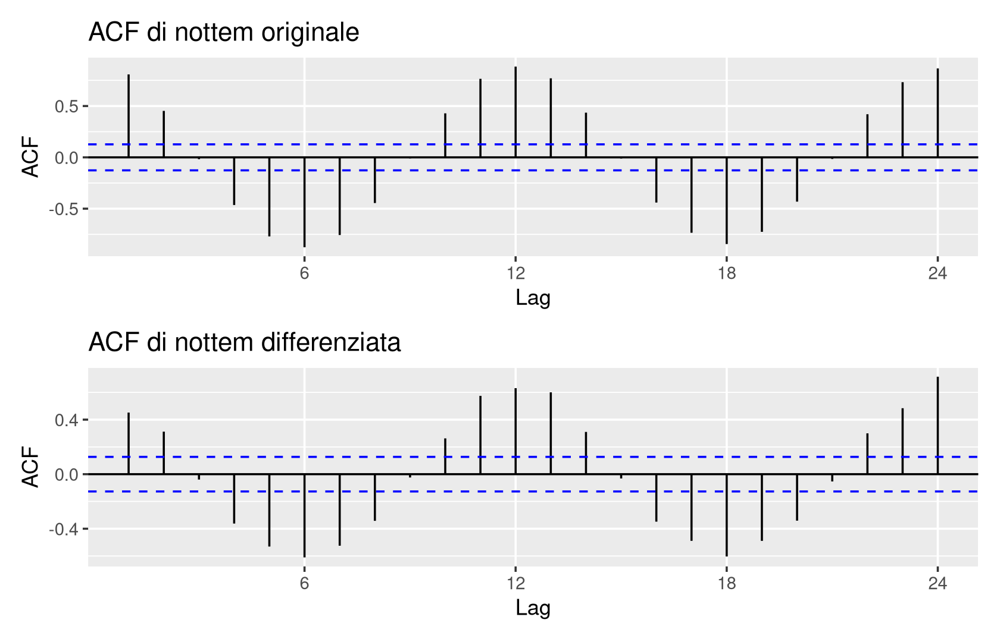
Il confronto delle due ACF mostra che, nonostante l’aumento di irregolarità visiva, la struttura periodica (il picco a ritardo 12, l’anticorrelazione a ritardo 6) resta sostanzialmente riconoscibile: la differenziazione, quando non c’è trend da rimuovere, non distrugge troppa informazione, anche se peggiora leggermente la leggibilità.
Consideriamo ora AirPassengers, dove il trend è forte:
diff_AP <- diff(AirPassengers)
autoplot(AirPassengers, main = "AirPassengers (nera) e differenziata (blu)") +
autolayer(diff_AP, series = "differenziata") +
scale_colour_manual(values = c("differenziata" = "blue"))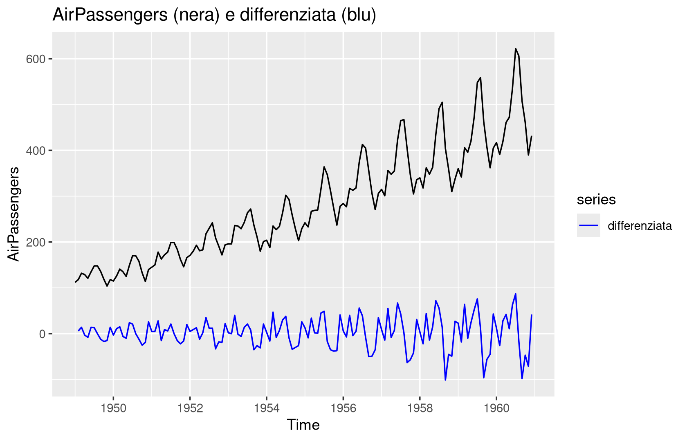
p1 <- ggAcf(AirPassengers) + ggtitle("ACF di AirPassengers originale")
p2 <- ggAcf(diff(AirPassengers)) + ggtitle("ACF di AirPassengers differenziata")
p1 / p2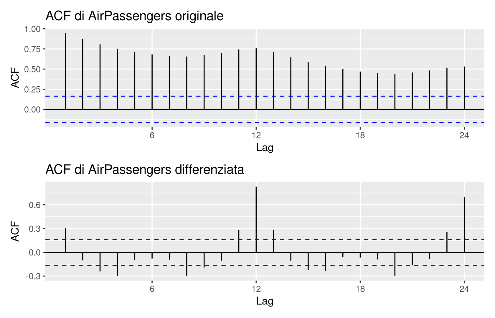
Il confronto è netto: nell’ACF originale la stagionalità era mascherata dal trend (tutti i ritardi mostravano correlazione elevata); nell’ACF della serie differenziata emerge un picco pulito a ritardo 12 (e uno più debole a ritardo 24), praticamente circondato da valori all’interno della banda di non-significatività. Un semplice passaggio di differenziazione ha “ripulito” enormemente l’ACF, confermando in modo netto il periodo annuale.
Resta però un problema visibile: nella serie differenziata, l’ampiezza delle oscillazioni cresce comunque negli anni più recenti — è la traccia residua della natura moltiplicativa di questa serie (la differenza tra valori grandi resta grande anche dopo la differenziazione). Questo osservazione motiva direttamente il prossimo passo.
Applicare la differenziazione più e più volte non è gratuito: ogni applicazione consuma un’osservazione e aumenta l’irregolarità della serie. La regola pratica “differenzia finché il trend non scompare” va quindi applicata con parsimonia, verificando ogni volta se il guadagno in pulizia dell’ACF giustifica la perdita di regolarità.
AirPassengers differenziata, perché ci si aspetta un picco proprio a ritardo 12 e non, ad esempio, a ritardo 7?AirPassengers, e perché la sola differenziazione non può risolverlo?Il problema lasciato in sospeso — l’ampiezza delle oscillazioni che cresce nel tempo — è tipico delle serie con natura moltiplicativa. La soluzione naturale è passare a una scala logaritmica prima di differenziare, esattamente come avevamo fatto per trasformare una decomposizione moltiplicativa in additiva.
\[ \operatorname{diff}(\log y)_t = \log(y_t) - \log(y_{t-1}) = \log\!\left(\frac{y_t}{y_{t-1}}\right). \] Più in generale, la trasformazione di Box-Cox con parametro \(\lambda\) è \[ y_t^{(\lambda)} = \begin{cases} \dfrac{y_t^\lambda - 1}{\lambda}, & \lambda \neq 0,\\[4pt] \log(y_t), & \lambda = 0. \end{cases} \]
La differenza dei logaritmi ha un’interpretazione pratica diretta: tornando alla scala originale, \(\operatorname{diff}(\log y)_t\) corrisponde al rapporto \(y_t/y_{t-1}\), cioè a un tasso di variazione percentuale (un valore vicino a \(0\) corrisponde a variazione nulla, un valore di \(\log(1.05)\approx 0.05\) a una crescita di circa il 5%). È per questo che le serie finanziarie sono spesso analizzate direttamente sui log-rendimenti.
La famiglia di Box-Cox va pensata come un’interpolazione continua tra “nessuna trasformazione” (\(\lambda=1\), a meno di una costante) e il logaritmo (\(\lambda=0\)): \(\lambda\) è un iperparametro che può essere stimato dai dati (in R, in modo quasi automatico), e a volte un valore intermedio funziona meglio sia della scala originale sia del logaritmo puro.
p1 <- autoplot(log(AirPassengers), main = "log(AirPassengers)")
p2 <- autoplot(diff(log(AirPassengers)), colour = "blue", main = "differenza del logaritmo")
p1 / p2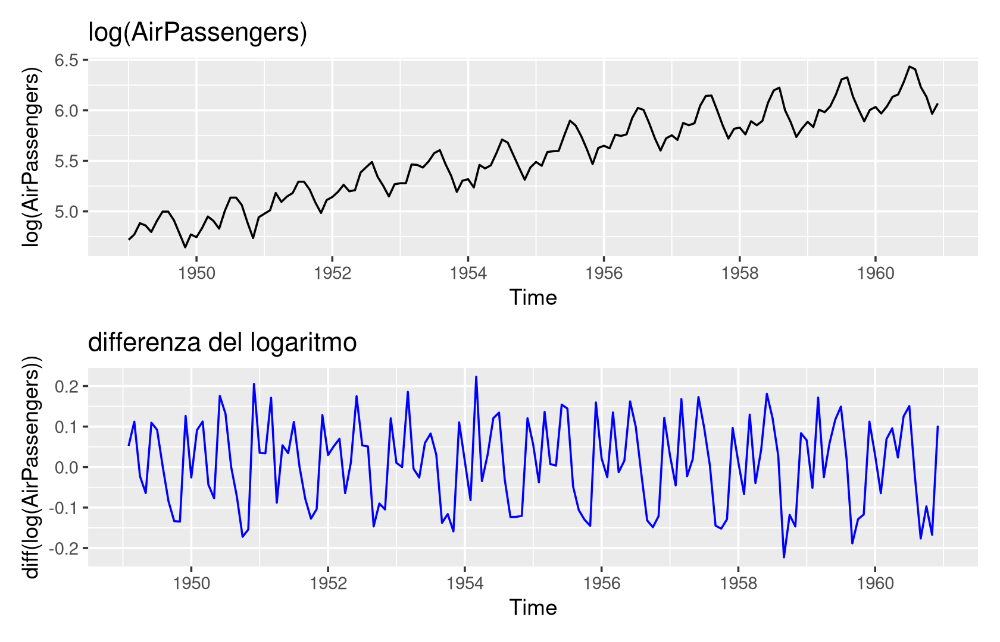
p1 <- ggAcf(log(AirPassengers)) + ggtitle("ACF di log(AirPassengers)")
p2 <- ggAcf(diff(log(AirPassengers))) + ggtitle("ACF della differenza del logaritmo")
p1 / p2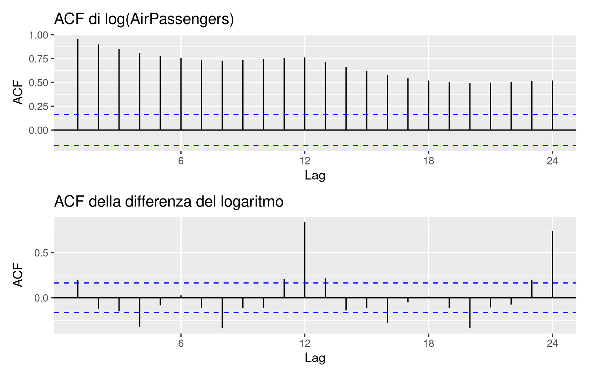
Con due trasformazioni elementari — logaritmo e differenza — le oscillazioni della serie trasformata risultano ora tutte sulla stessa scala, senza più l’aumento di ampiezza osservato prima. L’ACF, già buona dopo la sola differenziazione, migliora ulteriormente: i valori non significativi diventano ancora più piccoli, lasciando un singolo picco pulito.
Non aspettarti che logaritmo e differenziazione risolvano sempre tutto: esistono serie storiche per cui né una decomposizione additiva né una moltiplicativa sono pienamente soddisfacenti. La famiglia di Box-Cox, con \(\lambda\) stimato dai dati, offre in questi casi un compromesso più flessibile.
La differenziazione elimina il trend ma non lo stima esplicitamente: non fornisce mai un valore per \(T_t\). Un’alternativa che restituisce anche una stima esplicita del trend è il fitting di un modello di regressione sui tempi.
Se supponiamo che la serie storica abbia la forma \[ y_t = \beta_0 + \beta_1 t + S_t + R_t, \] possiamo stimare il trend con la retta di regressione di \(y_t\) rispetto a \(x_t=t\): \[ y_t = \beta_{0,\text{OLS}} + \beta_{1,\text{OLS}}\, t + \varepsilon_t := T_t + \varepsilon_t, \] ottenendo la serie de-trendizzata \(y_t - T_t\).
time <- 1:length(AirPassengers)
fit_lm <- lm(AirPassengers ~ time)
trend_est <- predict(fit_lm)
trend_est_ts <- ts(trend_est, start = start(AirPassengers), frequency = frequency(AirPassengers))
autoplot(AirPassengers, main = "AirPassengers e trend stimato (lineare)") +
autolayer(trend_est_ts, series = "trend stimato") +
scale_colour_manual(values = c("trend stimato" = "red"))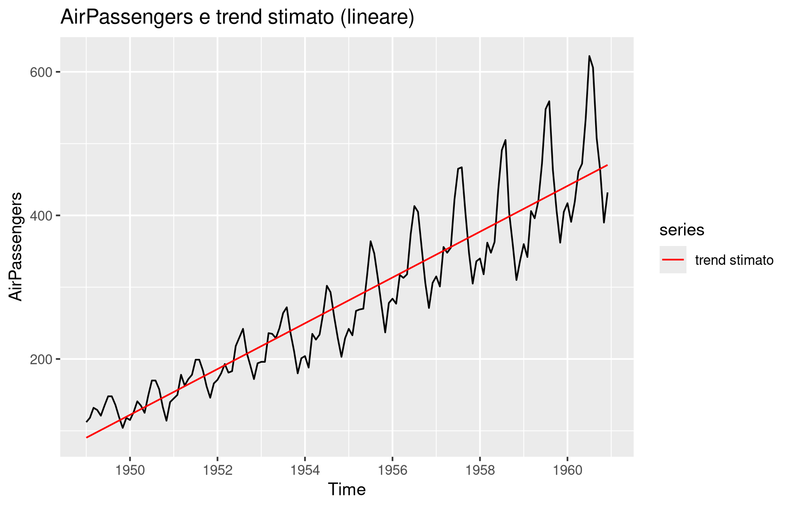
Prima di calcolare. Guardando questo grafico, ti sembra che una retta catturi bene il trend in tutti i sotto-periodi della serie, o solo in alcuni? In particolare, cosa succede negli anni finali della serie?
detrend <- AirPassengers - trend_est_ts
p1 <- autoplot(AirPassengers, main = "AirPassengers (nero) e trend lineare rimosso (blu)") +
autolayer(detrend, series = "detrendizzata") +
scale_colour_manual(values = c("detrendizzata" = "blue"))
p2 <- ggAcf(detrend, main = "ACF della serie detrendizzata")
p1 / p2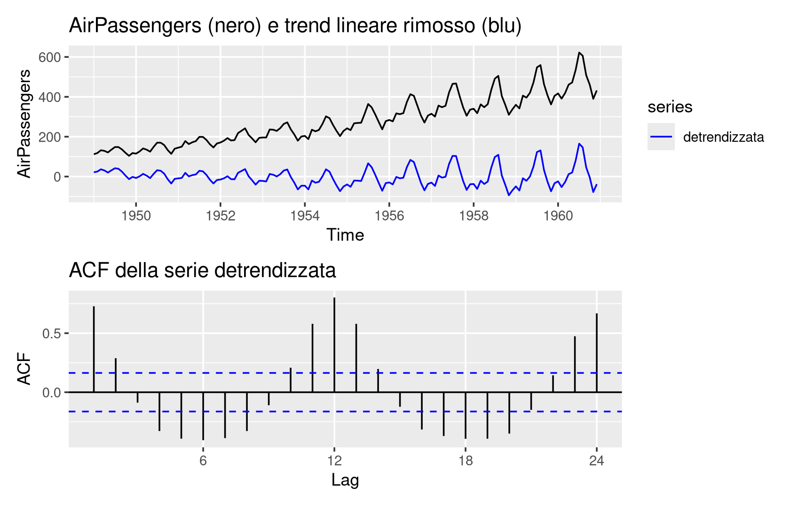
Dopo il calcolo. Guardando il grafico con la retta di regressione sovrapposta, si può notare che negli anni centrali e finali la serie tende a crescere più rapidamente della retta stimata: la retta sottostima sistematicamente il trend a lungo termine.
Il problema, in sostanza, è questo: se la decomposizione è moltiplicativa — come sospettavamo per AirPassengers — allora spesso non solo l’ampiezza delle oscillazioni cresce, ma il trend stesso è di natura esponenziale, non lineare. Ed è un fenomeno tipico non solo delle serie di conteggio come questa, ma soprattutto delle serie finanziarie, dove una crescita composta (interesse composto, crescita percentuale costante) produce esattamente un andamento esponenziale. Un fit lineare, in questi casi, sottostima sistematicamente il trend nel lungo periodo, perché una retta cresce troppo lentamente rispetto a un’esponenziale.
La correzione naturale è fare il fit sul logaritmo della serie, e poi tornare alla scala originale con l’esponenziale:
time <- 1:length(AirPassengers)
fit_lm_log <- lm(log(AirPassengers) ~ time)
trend_est_exp <- exp(predict(fit_lm_log))
trend_est_exp_ts <- ts(trend_est_exp, start = start(AirPassengers), frequency = frequency(AirPassengers))
autoplot(AirPassengers, main = "AirPassengers e trend stimato (esponenziale)") +
autolayer(trend_est_exp_ts, series = "trend stimato") +
scale_colour_manual(values = c("trend stimato" = "red"))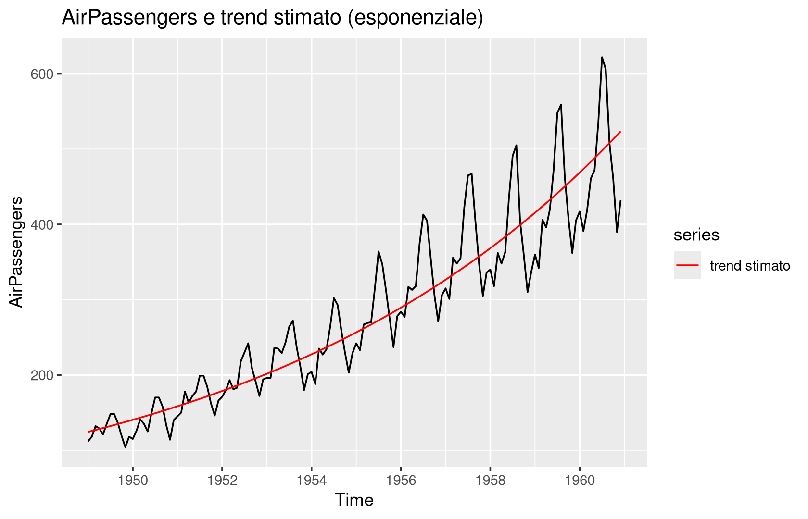
detrend_mult <- AirPassengers / trend_est_exp_ts
p1 <- autoplot(detrend_mult, colour = "blue", main = "Serie detrendizzata (moltiplicativa)")
p2 <- ggAcf(detrend_mult, main = "ACF della serie detrendizzata (esponenziale)")
p1 / p2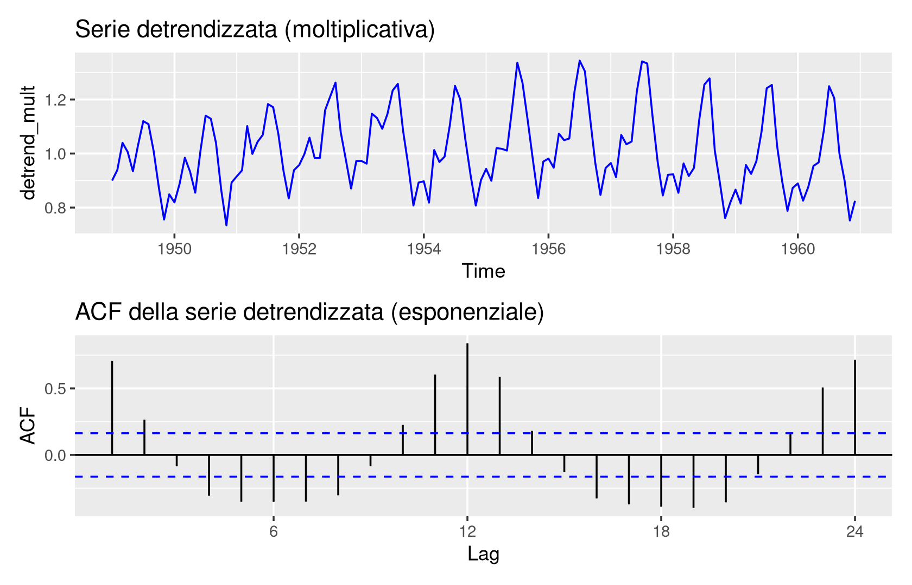
Confrontando i due approcci: la differenziazione tende a produrre un’ACF più pulita (come visto in precedenza), ma non fornisce mai una stima esplicita del trend. La regressione (lineare o log-lineare) fornisce invece una curva di trend interpretabile — utile, ad esempio, se vogliamo prevedere separatamente trend e stagionalità — al prezzo, di solito, di residui un po’ più grandi rispetto alla differenziazione. Nessuno dei due metodi è strettamente “migliore”: la scelta dipende dall’obiettivo (pulire l’ACF per scoprire il periodo, oppure ottenere una stima esplicita del trend da poter estrapolare).
Un fit di regressione lineare o log-lineare sul tempo è estrapolazione, nel senso più delicato del termine: nulla garantisce che l’andamento stimato sui dati storici continui a valere fuori dal periodo osservato. Un trend esponenziale stimato su dieci anni di dati può risultare del tutto irrealistico se proiettato cinquant’anni nel futuro.
Abbiamo ormai tutti gli ingredienti per completare la decomposizione “a mano”: rimuovere il trend, individuare il periodo tramite l’ACF, e infine calcolare esplicitamente la componente stagionale sfruttando esattamente l’idea già vista nel grafico di sottoserie.
Dato un periodo \(m\) (ad esempio \(m=12\) per dati mensili), la componente stagionale si stima mediando le osservazioni corrispondenti alla stessa posizione entro il periodo: \[ S_j = \frac{1}{N}\sum_{i=0}^{N-1} y_{j+im}, \qquad j=1,\ldots,m, \] dove \(N\approx T/m\) è il numero di cicli completi osservati. Il residuo è definito come \[ R_t := y_t - T_t - S_{(t \bmod m)}, \] da cui la decomposizione additiva \[ y_t = T_t + S_{(t \bmod m)} + R_t. \] Nel caso moltiplicativo, la componente stagionale si calcola in modo analogo ma sui logaritmi, e la decomposizione diventa \(y_t = T_t \times S_{(t\bmod m)} \times R_t\).
Si osservi la connessione con quanto già visto: \(S_j\) è esattamente la media della sottoserie relativa alla posizione \(j\), la stessa linea blu del grafico di sottoserie — ma questa volta calcolata dopo aver rimosso il trend.
library(dplyr)
compute_seasonal <- function(ts_data) {
freq <- frequency(ts_data)
df <- data.frame(time = time(ts_data), value = as.numeric(ts_data))
seasonal_avg <- df %>%
group_by(season = round((time %% 1) * freq)) %>%
summarize(seasonal_value = mean(value, na.rm = TRUE)) %>%
ungroup() %>%
arrange(season)
seasonal_component <- rep(seasonal_avg$seasonal_value, length.out = length(ts_data))
ts(seasonal_component, frequency = freq, start = start(ts_data))
}
seasonal_part <- compute_seasonal(nottem)
residuals_nottem <- nottem - seasonal_part
p1 <- autoplot(nottem, main = "nottem (nero), componente stagionale (rosso)")
p2 <- autoplot(seasonal_part, colour = "red", main = "Componente stagionale stimata")
p3 <- ggAcf(residuals_nottem, main = "ACF dei residui")
p1 / p2 / p3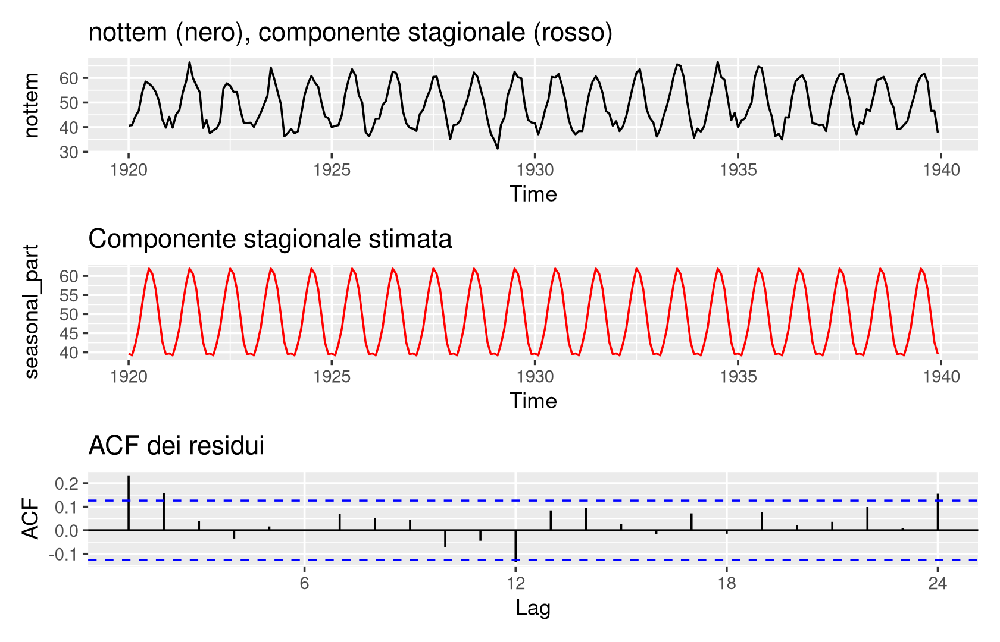
nottem non ha trend, quindi qui compute_seasonal() si applica direttamente alla serie originale. La componente stagionale risulta perfettamente periodica per costruzione (è la stessa curva ripetuta ogni 12 mesi), mentre i residui, pur mostrando ancora un po’ di correlazione (non esattamente a 12 mesi, curiosamente), sono complessivamente più piccoli e meno strutturati della serie originale.
time_idx <- 1:length(AirPassengers)
fit_lm_log <- lm(log(AirPassengers) ~ time_idx)
trend_est_exp <- exp(predict(fit_lm_log))
trend_est_exp_ts <- ts(trend_est_exp, start = start(AirPassengers), frequency = frequency(AirPassengers))
detrend_mult <- AirPassengers / trend_est_exp_ts
seasonal_part_log <- compute_seasonal(log(detrend_mult))
residuals_log <- log(AirPassengers) - seasonal_part_log
p1 <- autoplot(AirPassengers, main = "AirPassengers e trend stimato (esponenziale)") +
autolayer(trend_est_exp_ts, series = "trend") +
scale_colour_manual(values = c("trend" = "red"))
p2 <- autoplot(exp(seasonal_part_log), main = "Componente stagionale (scala originale)")
p3 <- ggAcf(residuals_log, main = "ACF dei log-residui (decomposizione moltiplicativa)")
p1 / p2 / p3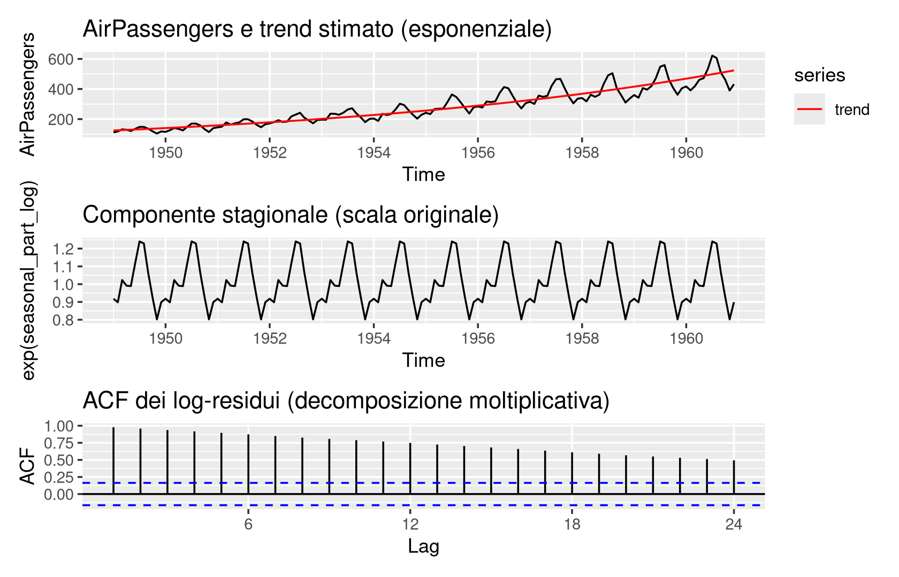
Guardando l’ultima ACF, la decomposizione non è particolarmente efficace: i residui mostrano ancora una struttura di trend residuo, cioè l’ACF non cade dentro le bande di non-significatività come vorremmo. È un giudizio esplicito e onesto sulla qualità della decomposizione elementare che abbiamo appena costruito “a mano”: trovare il trend con un semplice fit esponenziale non è la strategia migliore possibile. Vedremo, nel prossimo capitolo sullo smoothing esponenziale e sulla famiglia ETS (capitolo 10) e più avanti nel capitolo sui modelli ARIMA (capitolo 11), strategie di decomposizione e stima del trend più sofisticate (ad esempio basate su medie mobili o su modelli statistici espliciti).
Questo criterio — controllare se l’ACF dei residui rientra nelle bande di non-significatività — è il modo operativo più semplice per valutare la qualità di una decomposizione: una buona decomposizione lascia residui che assomigliano a rumore bianco.
Per esercitarti con la decomposizione su un caso nuovo, generiamo una serie simulata che imita le vendite mensili di un piccolo negozio in crescita, con un effetto stagionale la cui ampiezza cresce insieme al livello (tipica firma di una struttura moltiplicativa):
set.seed(750)
n_anni <- 8
t_idx <- 1:(n_anni * 12)
trend_vendite <- 100 + 1.5 * t_idx
stagionalita_pct <- rep(c(0.05, -0.05, -0.10, -0.05, 0.05, 0.15,
0.20, 0.10, -0.05, -0.10, -0.05, 0.15), n_anni)
rumore <- rnorm(length(t_idx), mean = 0, sd = 0.03)
vendite <- trend_vendite * (1 + stagionalita_pct) * (1 + rumore)
vendite_ts <- ts(vendite, start = c(2017, 1), frequency = 12)
autoplot(vendite_ts, main = "Vendite mensili simulate di un negozio")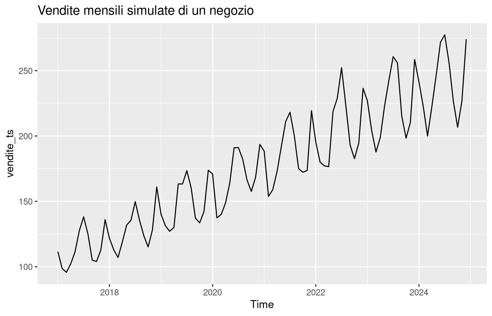
Osserva l’ampiezza delle oscillazioni stagionali nei primi anni rispetto agli ultimi.
Prima di calcolare: in base a quanto discusso sulla scelta tra decomposizione additiva e moltiplicativa, quale delle due ti aspetti sia più adeguata per questa serie? Prova a rispondere prima di eseguire il codice seguente.
fit_vendite <- decompose(vendite_ts, type = "multiplicative")
autoplot(fit_vendite)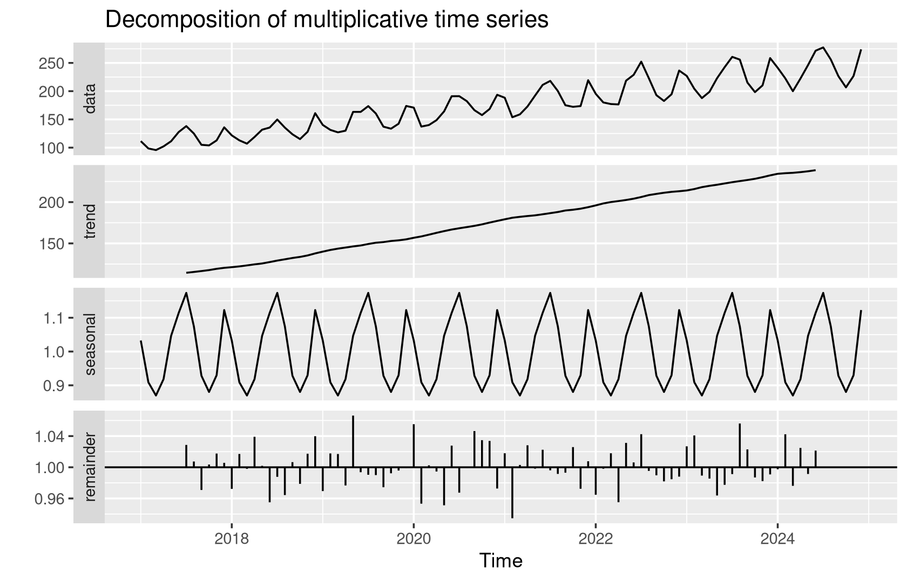
Dopo il calcolo: confronta la tua previsione con il risultato. Prova anche a eseguire decompose(vendite_ts, type = "additive") e a confrontare i residui delle due decomposizioni: quale ACF dei residui ti aspetti sia più vicina al rumore bianco?
compute_seasonal() è, per costruzione, esattamente periodica, mentre la serie originale non lo è mai esattamente?AirPassengers, cosa indica il fatto che l’ACF dei residui non rientri nelle bande di significatività?Fino a questo punto ci siamo occupati di descrivere e “ripulire” una serie storica. Ma l’obiettivo dichiarato fin dall’inizio del capitolo è la previsione. Prima di affrontare modelli sofisticati (che vedremo nei prossimi due capitoli), vale la pena conoscere alcuni modelli elementari: sono spesso un ottimo punto di partenza, un termine di paragone imprescindibile per giudicare se un modello più complesso vale davvero la pena, e in alcuni contesti applicativi (anche professionali) sono già sufficienti.
Indichiamo con \(\hat y_{t+h|t}\) la previsione del valore \(y_{t+h}\), costruita usando solo l’informazione osservata \((y_s)_{s=1,\ldots,t}\). I quattro modelli elementari sono:
Ciascuno di questi modelli codifica un’ipotesi minima diversa: il naive assume che “domani sarà come oggi” (nessun trend, nessuna stagionalità); la media assume che il livello sia stabile e usa tutta la storia per stimarlo, il che lo rende robusto al rumore ma cieco a qualunque trend o stagionalità; il naive stagionale riconosce la periodicità ma non il trend; il drift stima un trend elementare (la pendenza media osservata dall’inizio alla fine della serie) ma ignora la stagionalità.
naive_fit <- naive(AirPassengers, h = 24)
snaive_fit <- snaive(AirPassengers, h = 24)
drift_fit <- rwf(AirPassengers, h = 24, drift = TRUE)
autoplot(AirPassengers) +
autolayer(naive_fit, series = "Naive", PI = FALSE) +
autolayer(snaive_fit, series = "Seasonal naive", PI = FALSE) +
autolayer(drift_fit, series = "Drift", PI = FALSE) +
ggtitle("Previsioni elementari per AirPassengers") +
guides(colour = guide_legend(title = "Metodo"))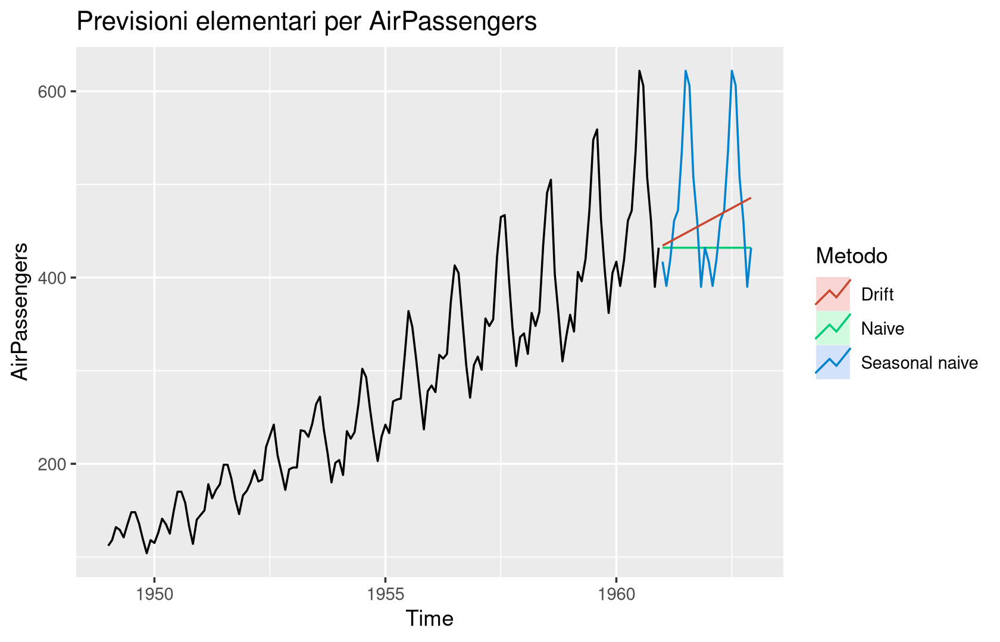
Consideriamo ora nottem, dove sappiamo già che non c’è trend ma c’è forte stagionalità.
Prima di calcolare. Sulla base di quanto sai di questa serie, quale dei quattro metodi elementari ti aspetti funzioni meglio? Quale ti aspetti funzioni peggio, e perché?
naive_fit_n <- naive(nottem, h = 24)
snaive_fit_n <- snaive(nottem, h = 24)
drift_fit_n <- rwf(nottem, h = 24, drift = TRUE)
mean_fit_n <- meanf(nottem, h = 24)
autoplot(nottem) +
autolayer(naive_fit_n, series = "Naive", PI = FALSE) +
autolayer(snaive_fit_n, series = "Seasonal naive", PI = FALSE) +
autolayer(drift_fit_n, series = "Drift", PI = FALSE) +
autolayer(mean_fit_n, series = "Media", PI = FALSE) +
ggtitle("Previsioni elementari per nottem") +
guides(colour = guide_legend(title = "Metodo"))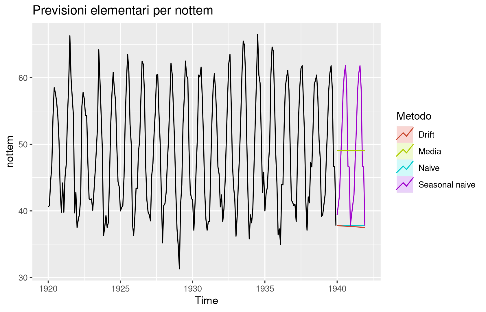
Dopo il calcolo. Confronta il grafico con la tua previsione. In assenza di trend, la media e il naive stagionale dovrebbero comportarsi ragionevolmente bene, mentre naive e drift tendono a essere poco realistici (il naive resta bloccato sull’ultimo valore osservato, magari un mese “estremo”; il drift estrapola un trend che di fatto non esiste).
Nessuno di questi quattro modelli è “il migliore” in assoluto: la scelta dipende dalla struttura della serie (presenza di trend, presenza di stagionalità) e dall’orizzonte di previsione \(h\). Per questo servono strumenti quantitativi di confronto — la cross-validation temporale, di cui parliamo nella prossima sezione — invece di affidarsi solo all’impressione visiva.
Non sottovalutare questi modelli solo perché sono elementari: in molti contesti applicativi reali (compresi progetti aziendali concreti) un modello naive stagionale o drift ben scelto è già sufficiente, e batte spesso modelli più sofisticati mal specificati. La complessità di un modello non è un merito in sé.
AirPassengers?I modelli elementari codificano ciascuno un’ipotesi molto specifica e rigida. Un’alternativa più flessibile, che abbiamo già incontrato per la classificazione (capitolo 4) e per la regressione (capitolo 6) — “avrete visto KNN in tutte le salse”, si potrebbe dire — è adattare l’idea di K-Nearest Neighbors alla previsione di serie storiche.
Fissato un insieme di ritardi \(\mathcal{L}\subseteq\{1,2,\ldots\}\), si costruisce per ogni tempo \(t\) un vettore di caratteristiche \[ (y_{t-\ell})_{\ell\in\mathcal{L}} \in \mathbb{R}^{|\mathcal{L}|}. \] Dato un nuovo istante da prevedere, si individuano i \(k\) tempi passati \(t_1,\ldots,t_k\) le cui caratteristiche sono più vicine (in \(\mathbb{R}^{|\mathcal{L}|}\)) a quelle del presente, e si pone \[ \hat y_{t+1|t} = \frac{y_{t_1}+y_{t_2}+\cdots+y_{t_k}}{k}. \]
L’idea è, letteralmente, “cercare pattern simili nel passato”: se in \(k\) occasioni precedenti la serie ha mostrato un andamento (negli ultimi \(|\mathcal{L}|\) tempi) molto simile a quello attuale, la previsione più ragionevole è la media di ciò che è successo subito dopo, in quelle occasioni. È un approccio “agnostico” rispetto alla struttura della serie: non richiede di dichiarare esplicitamente cosa sia trend e cosa sia stagionalità, il che lo rende adatto a serie non lineari o rumorose in cui quella distinzione è difficile da fare a priori.
library(tsfknn)
model_knn <- knn_forecasting(AirPassengers, h = 24, lags = 1:12, k = 3, transform = "none")
autoplot(model_knn) + ggtitle("Previsione KNN per AirPassengers (lag 1:12, k=3)")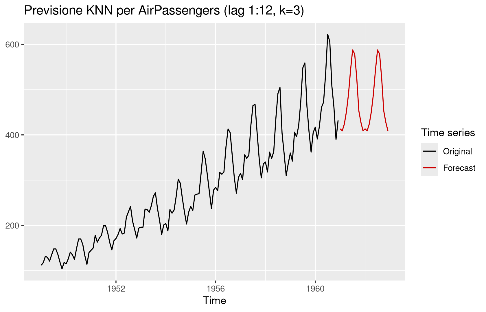
model_knn_1 <- knn_forecasting(AirPassengers, h = 1, lags = 1:12, k = 3, transform = "none")
autoplot(model_knn_1, highlight = "neighbours") +
ggtitle("KNN: quali istanti passati vengono usati per la previsione?")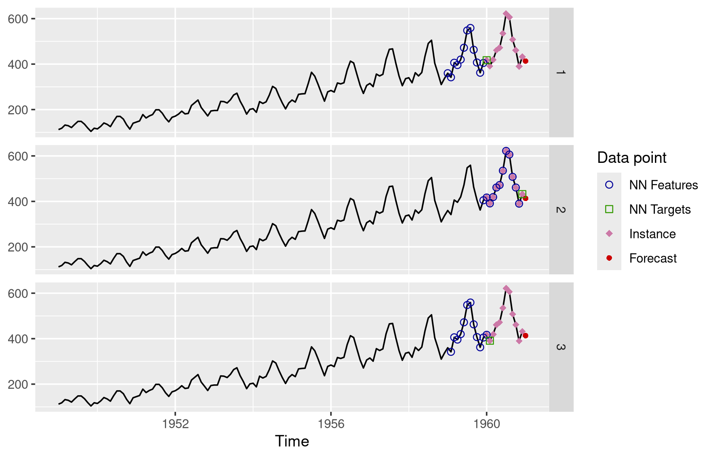
NULLIl secondo grafico mostra concretamente cosa fa l’algoritmo: usando come caratteristiche i 12 mesi precedenti, i tre “vicini” più simili al presente risultano essere l’istante immediatamente precedente e i due istanti analoghi di uno o due anni prima — esattamente il tipo di pattern stagionale che ci aspetteremmo trovasse un essere umano guardando il grafico “a occhio”.
Come i modelli naive, però, KNN nella sua forma di base soffre dello stesso limite rispetto al trend: se la serie è cresciuta costantemente, tutti i pattern simili trovati nel passato avranno valori sistematicamente più bassi di quelli attuali, e la media dei vicini sottostimerà il valore futuro. Una correzione pratica consiste nell’applicare KNN a una versione della serie con trend rimosso (ad esempio in scala moltiplicativa):
model_knn_mult <- knn_forecasting(AirPassengers, h = 24, lags = 1:12, k = 3, transform = "multiplicative")
autoplot(model_knn_mult) + ggtitle("KNN con correzione per trend moltiplicativo")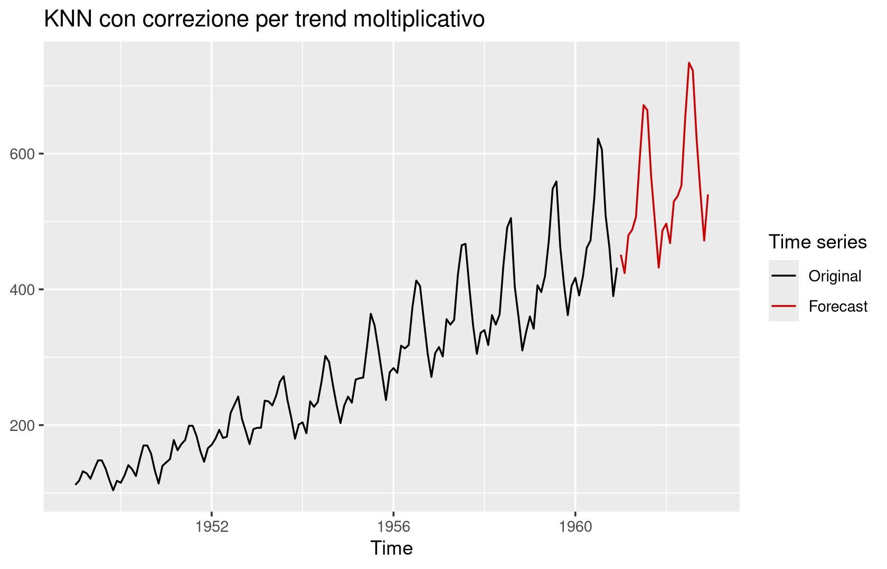
Su una serie molto più rumorosa, come uno degli indici di EuStockMarkets, la stessa tecnica produce risultati assai meno convincenti:
model_knn_stock <- knn_forecasting(EuStockMarkets[, 4], h = 200, lags = 1:3, k = 3, transform = "multiplicative")
autoplot(model_knn_stock) + ggtitle("Previsione KNN su una serie finanziaria (FTSE)")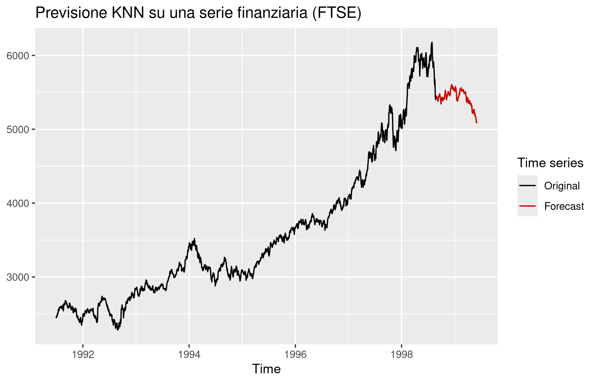
KNN per serie storiche introduce due iperparametri da scegliere: il numero di vicini \(k\) e l’insieme di ritardi \(\mathcal{L}\) (in pratica, quanti mesi/periodi indietro guardare). Scelte diverse possono produrre previsioni radicalmente diverse — alcune ragionevoli, altre completamente fuori scala — specialmente su serie rumorose come quelle finanziarie. Non esiste una scelta “giusta” a priori: serve, ancora una volta, una procedura di validazione, che è l’argomento della prossima sezione.
AirPassengers?Abbiamo appena visto diversi modelli (naive, media, naive stagionale, drift, KNN con vari iperparametri) e la domanda naturale è: quale scegliere? Nei capitoli su classificazione e regressione (in particolare il capitolo 4) la risposta era la cross-validation (leave-\(p\)-out, k-fold). Con le serie storiche, però, questa risposta va adattata, perché la procedura ordinaria violerebbe l’ordine temporale dei dati.
Nella k-fold o nella leave-one-out cross-validation ordinarie, i dati vengono divisi in blocchi (o singole osservazioni) scelti senza tenere conto dell’ordine: alcune osservazioni usate per il training possono benissimo essere temporalmente successive a quelle usate per il test. Per una serie storica questo equivale a un leakage (fuga di informazione dal futuro): il modello “impara” usando dati che, nella realtà della previsione, non sarebbero ancora disponibili. Il risultato è una stima dell’errore di generalizzazione artificialmente ottimistica e inutilizzabile in pratica.
La regola fondamentale, valida per qualunque procedura di validazione su serie storiche, è quindi: non usare mai osservazioni future per addestrare o validare un modello che deve prevedere il passato rispetto a quelle osservazioni.
Il primo accorgimento, sempre raccomandato indipendentemente dal fatto che si faccia poi una cross-validation vera e propria, è dividere la serie in due intervalli temporali consecutivi, non in un campionamento casuale:
Si definisce \[ \text{train} = (y_t)_{t=1,\ldots,T_{\text{train}}}, \qquad \text{test} = (y_t)_{t=T_{\text{train}}+1,\ldots,T}, \] tipicamente con una proporzione \(80\%/20\%\). Si allena il modello solo sul train, si producono le previsioni \(\hat y_{T_{\text{train}}+1|T_{\text{train}}},\ldots,\hat y_{T|T_{\text{train}}}\), e si confrontano con i valori veri del test tramite una metrica come \[ \text{MSE} = \frac{1}{T-T_{\text{train}}}\sum_{t=T_{\text{train}}+1}^{T} \left(y_t - \hat y_{t|T_{\text{train}}}\right)^2. \]
train_data <- window(AirPassengers, end = c(1958, 12))
test_data <- window(AirPassengers, start = c(1959, 1))
model_snaive <- snaive(train_data, h = length(test_data))
autoplot(train_data) +
autolayer(test_data, series = "test") +
autolayer(model_snaive, series = "previsione (seasonal naive)", PI = FALSE) +
ggtitle("AirPassengers: train/test e previsione") +
theme(legend.position = "bottom")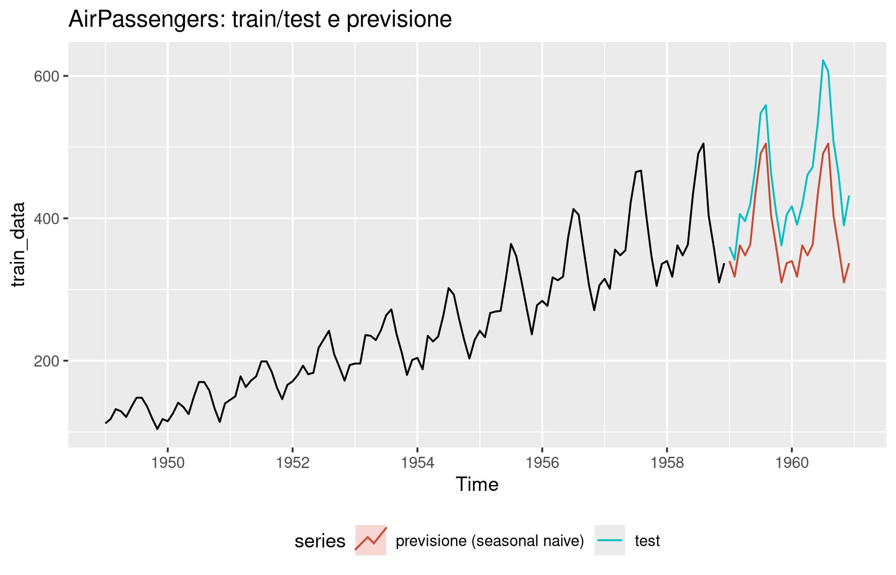
Una singola divisione train/test è semplice ma ha lo stesso difetto già incontrato in classificazione e regressione con la validazione singola (capitolo 4): valuta il modello su un solo intervallo temporale, quindi il risultato può dipendere fortemente da quale particolare finestra sia finita nel test set. Con le serie storiche il problema è persino più delicato: se il risultato non convince, non si può “ripetere l’esperimento” con un altro campione — di solito si dispone di una sola serie storica.
La soluzione, analoga nello spirito alla k-fold cross-validation, è la validazione rolling origin (o walk-forward):
Si fissa un insieme di origini temporali \(t_1<t_2<\cdots<t_K\). Per ciascuna origine \(t_i\), si allena il modello usando solo i dati fino a \(t_i\) e si valutano le previsioni su un orizzonte fisso \(h\): \[ \hat y_{t_i+1|t_i}, \hat y_{t_i+2|t_i}, \ldots, \hat y_{t_i+h|t_i}. \] Si aggrega l’errore su tutte le origini e su tutto l’orizzonte, ad esempio \[ \text{MSE} = \frac{1}{K\cdot h}\sum_{i=1}^{K}\sum_{j=1}^{h}\left(y_{t_i+j} - \hat y_{t_i+j|t_i}\right)^2. \]
A ogni origine si “fa scorrere in avanti” il punto di taglio tra passato e futuro — da cui il nome — e si valuta la performance su molte finestre temporali diverse, anziché su una sola. Una terza variante, che non useremo esplicitamente ma vale la pena conoscere, è la blocked CV, in cui invece di ampliare progressivamente il training set lo si fa scorrere a blocchi consecutivi di dimensione fissa.
cv_naive <- tsCV(AirPassengers, forecastfunction = naive, h = 24)
cv_snaive <- tsCV(AirPassengers, forecastfunction = snaive, h = 24)
cv_drift <- tsCV(AirPassengers, forecastfunction = rwf, h = 24, drift = TRUE)
rmse_naive <- sqrt(colMeans(cv_naive^2, na.rm = TRUE))
rmse_snaive <- sqrt(colMeans(cv_snaive^2, na.rm = TRUE))
rmse_drift <- sqrt(colMeans(cv_drift^2, na.rm = TRUE))
df_rmse <- data.frame(
h = rep(1:24, 3),
RMSE = c(rmse_naive, rmse_snaive, rmse_drift),
Metodo = rep(c("Naive", "Seasonal naive", "Drift"), each = 24)
)
ggplot(df_rmse, aes(x = h, y = RMSE, colour = Metodo)) +
geom_line() + geom_point() +
labs(title = "RMSE via rolling origin CV, al variare dell'orizzonte h",
x = "Orizzonte di previsione (mesi)", y = "RMSE") +
theme_minimal()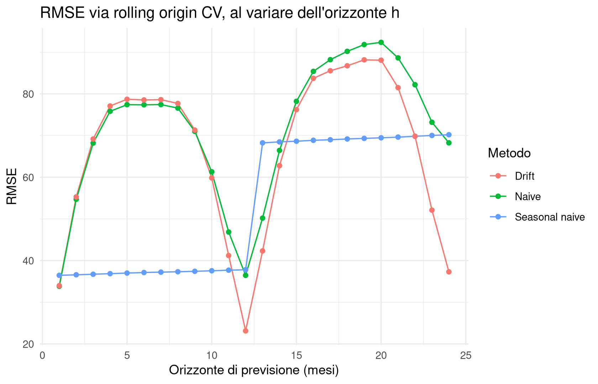
Il grafico permette un confronto quantitativo, non solo visivo, tra i tre modelli al variare dell’orizzonte di previsione. Tipicamente si osserva che il naive stagionale è competitivo entro un anno (perché coglie bene la periodicità), mentre il drift diventa relativamente migliore proprio intorno a \(h=12\) (un anno intero, dove la stagionalità “si richiude” su se stessa e conta soprattutto la stima del trend); oltre l’anno, l’errore del drift tende a crescere di nuovo. Il naive puro, che ignora sia trend sia stagionalità, è quasi sempre il peggiore. La scelta del modello “migliore” dipende quindi esplicitamente da quale orizzonte di previsione interessa, non è un verdetto assoluto.
La stessa idea di rolling-origin CV si applica alla selezione degli iperparametri \((k, \mathcal{L})\) del modello KNN, esattamente come la k-fold CV si usava per scegliere \(k\) nel KNN di classificazione/regressione (capitolo 4):
evaluate_kNN <- function(ts_data, k_values, lag_values, h = 12) {
results <- expand.grid(k = k_values, lag = lag_values)
results$RMSE <- NA
for (i in 1:nrow(results)) {
fcast_fun <- function(x, h) {
model <- knn_forecasting(x, h = h, lags = 1:results$lag[i], k = results$k[i], transform = "none")
structure(list(mean = as.numeric(model$prediction), fitted = NULL, x = x), class = "forecast")
}
cv_errors <- tsCV(ts_data, forecastfunction = fcast_fun, h = h)
results$RMSE[i] <- sqrt(mean(cv_errors^2, na.rm = TRUE))
}
results
}
cv_results <- evaluate_kNN(AirPassengers, k_values = c(2, 5, 10, 15), lag_values = c(2, 5, 10, 15))
ggplot(cv_results, aes(x = factor(lag), y = RMSE, colour = factor(k))) +
geom_point(size = 3) + geom_line(aes(group = k)) +
labs(title = "Rolling origin CV per KNN (AirPassengers)",
x = "Numero massimo di ritardi", y = "RMSE", colour = "k") +
theme_minimal()Applicando la stessa procedura a una serie finanziaria rumorosa (ad esempio uno degli indici di EuStockMarkets), la superficie di errore al variare di \(k\) e \(\mathcal{L}\) tende a essere molto meno regolare: combinazioni di iperparametri diverse possono suggerire previsioni qualitativamente opposte (alcune crescenti, altre decrescenti) senza un vincitore chiaro. È un altro sintomo, coerente con quanto già osservato per l’ACF e la cross-correlazione, del fatto che questi strumenti — pur concettualmente corretti — funzionano meglio su serie con struttura riconoscibile (trend, stagionalità pulita) che su serie dominate dal rumore.
AirPassengers?AirPassengers. Che cosa spiega questa differenza?Il dataset co2 (incluso nella base di R) registra le concentrazioni mensili di CO₂ atmosferica rilevate all’osservatorio di Mauna Loa dal 1959 al 1997: una serie con trend molto marcato e stagionalità annuale regolare, diversa nella forma da AirPassengers ma altrettanto istruttiva.
data("co2")
autoplot(co2, main = "Concentrazione di CO2 atmosferica, Mauna Loa")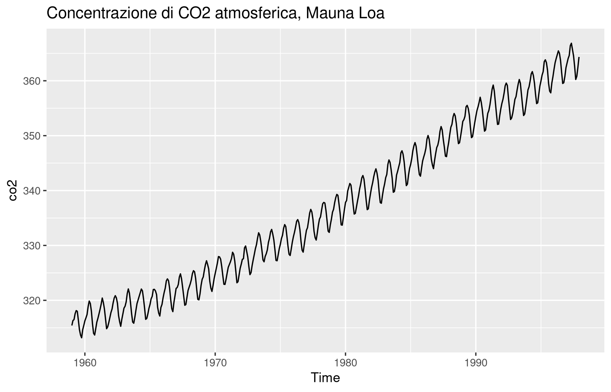
AirPassengers o a nottem? Perché?co2? Motiva la risposta prima di calcolare qualunque cosa.fit_co2 <- decompose(co2, type = "additive")
autoplot(fit_co2)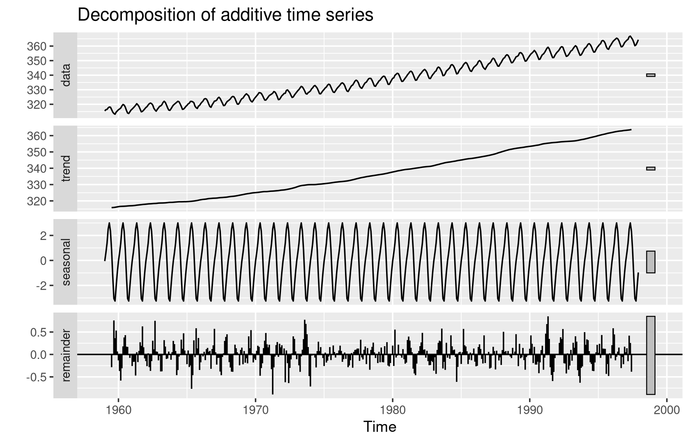
ggAcf(co2)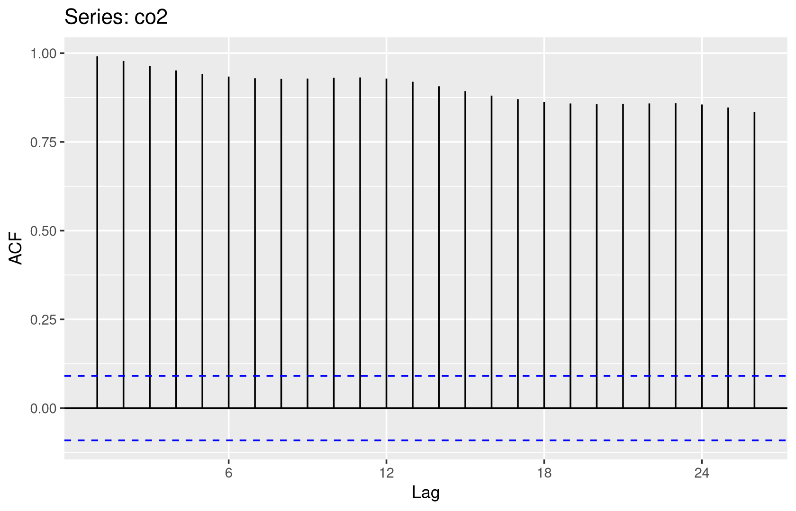
co2 mostra un decadimento lento a tutti i ritardi, simile a quanto osservato per AirPassengers. Quale operazione dovresti applicare prima di poter leggere chiaramente il periodo stagionale?diff() a co2 e ricalcola l’ACF (ggAcf(diff(co2))). Descrivi cosa cambia, e a quale ritardo ti aspetti (e osservi) il picco più marcato.co2 con quello di AirPassengers (additiva) visto nel capitolo. Quale delle due decomposizioni ti sembra più vicina al rumore bianco?train_co2 <- window(co2, end = c(1990, 12))
test_co2 <- window(co2, start = c(1991, 1))
fc_naive <- naive(train_co2, h = length(test_co2))
fc_snaive <- snaive(train_co2, h = length(test_co2))
fc_drift <- rwf(train_co2, h = length(test_co2), drift = TRUE)
autoplot(train_co2) +
autolayer(test_co2, series = "osservato") +
autolayer(fc_naive, series = "naive", PI = FALSE) +
autolayer(fc_snaive, series = "seasonal naive", PI = FALSE) +
autolayer(fc_drift, series = "drift", PI = FALSE) +
ggtitle("Previsioni su co2: train fino al 1990, test 1991+") +
theme(legend.position = "bottom")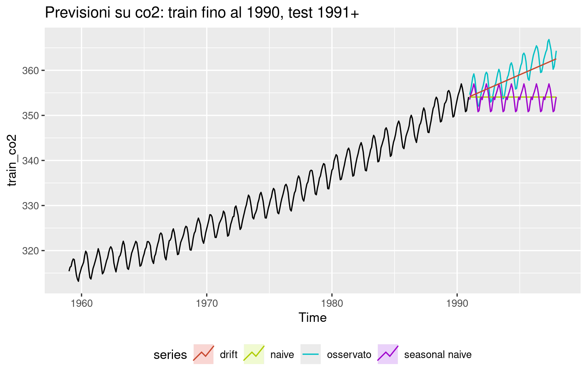
co2 ha sia trend sia stagionalità marcati? Calcola l’MSE di ciascuno sul test set e verifica.mse_naive <- mean((test_co2 - fc_naive$mean)^2)
mse_snaive <- mean((test_co2 - fc_snaive$mean)^2)
mse_drift <- mean((test_co2 - fc_drift$mean)^2)
c(naive = mse_naive, snaive = mse_snaive, drift = mse_drift)tsCV() per un confronto rolling-origin più robusto (analogo a quello svolto nel capitolo per AirPassengers), con orizzonte h = 12. Il ranking dei tre metodi cambia rispetto alla singola divisione train/test? Cosa suggerisce questo sulla robustezza delle conclusioni tratte da una singola divisione train/test?tsfknn::knn_forecasting) su co2 con un paio di scelte di lags e k a tua discrezione. Confronta visivamente la previsione con quella del seasonal naive: quale ti sembra più credibile, e perché?